228 papers · 49 relevant · 5 highlighted
Every paper with at least one nonzero topic score, sorted by best-matching score. 🔥 marks scores ≥4/5. Click the title to jump to the full entry below; click [arXiv] to open the paper page. (secondary) marks papers from de-prioritized cond-mat archives.
analog quantum simulation 5/5 · 🔥 exotic spin models in light-matter 4/5 · 🔥 non-equilibrium dynamics 4/5 · entanglement & information structure 3/5 · QC/QI experiment 2/5 · non-equilibrium universality 2/5 · quantum measurements 2/5free-space correlated emission 5/5 · 🔥 Dicke superradiance 4/5 · 🔥 correlated / nonlocal dissipation 4/5 · methods for driven-dissipative 2/5 · non-equilibrium universality 2/5quantum optics experiment 5/5 · 🔥 QC/QI experiment 4/5 · interference shaping light 3/5 · entanglement & information structure 2/5 · quantum measurements 2/5spintronics-quantum-optics interface 5/5 · 🔥 entanglement & information structure 4/5 · Tavis-Cummings & cavity-many-emitter 2/5 · correlated / nonlocal dissipation 2/5QC/QI experiment 5/5 · 🔥 entanglement & information structure 4/5 · quantum measurements 2/5scars & prethermalization 5/5 · entanglement & information structure 3/5 · non-equilibrium dynamics 3/5measurement-induced transitions 4/5 · 🔥 quantum measurements 4/5 · driven-dissipative phase transition 3/5 · non-equilibrium universality 3/5 · Keldysh / 2PI / non-Gaussian methods 2/5 · entanglement & information structure 2/5 · methods for driven-dissipative 2/5 · non-equilibrium dynamics 2/5correlated cavity matter 4/5 · 🔥 entanglement & information structure 4/5 · Keldysh / 2PI / non-Gaussian methods 3/5 · spintronics-quantum-optics interface 3/5 · Tavis-Cummings & cavity-many-emitter 2/5 · analog quantum simulation 2/5 · correlated / nonlocal dissipation 2/5 · exotic spin models in light-matter 2/5non-equilibrium dynamics 4/5 · Kondo & dissipative impurity 3/5 · analog quantum simulation 3/5 · entanglement & information structure 3/5 · Keldysh / 2PI / non-Gaussian methods 2/5 · non-equilibrium universality 2/5non-equilibrium universality 4/5 · Tavis-Cummings & cavity-many-emitter 3/5 · non-equilibrium dynamics 3/5 · analog quantum simulation 2/5 · correlated cavity matter 2/5 · entanglement & information structure 2/5entanglement & information structure 4/5 · 🔥 non-equilibrium dynamics 4/5 · non-equilibrium universality 3/5 · scars & prethermalization 3/5methods for driven-dissipative 4/5 · driven-dissipative phase transition 3/5 · non-equilibrium dynamics 3/5 · correlated / nonlocal dissipation 2/5 · entanglement & information structure 2/5(secondary) — 🔥 quantum optics experiment 4/5 · correlated cavity matter 3/5 · QC/QI experiment 2/5 · Tavis-Cummings & cavity-many-emitter 2/5 · analog quantum simulation 2/5non-equilibrium dynamics 4/5 · methods for driven-dissipative 3/5 · Keldysh / 2PI / non-Gaussian methods 2/5 · driven-dissipative phase transition 2/5 · non-equilibrium universality 2/5correlated / nonlocal dissipation 4/5 · quantum measurements 3/5 · Tavis-Cummings & cavity-many-emitter 2/5 · entanglement & information structure 2/5 · methods for driven-dissipative 2/5Kondo & dissipative impurity 4/5 · 🔥 methods for driven-dissipative 4/5 · non-equilibrium dynamics 3/5 · Keldysh / 2PI / non-Gaussian methods 2/5non-equilibrium dynamics 4/5 · analog quantum simulation 3/5 · methods for driven-dissipative 3/5 · driven-dissipative phase transition 2/5QC/QI experiment 4/5 · 🔥 quantum optics experiment 4/5 · interference shaping light 2/5 · spintronics-quantum-optics interface 2/5quantum measurements 4/5 · correlated / nonlocal dissipation 2/5 · entanglement & information structure 2/5 · methods for driven-dissipative 2/5 · non-equilibrium dynamics 2/5correlated / nonlocal dissipation 4/5 · methods for driven-dissipative 3/5 · entanglement & information structure 2/5 · non-equilibrium dynamics 2/5non-equilibrium dynamics 4/5 · methods for driven-dissipative 3/5 · driven-dissipative phase transition 2/5 · entanglement & information structure 2/5entanglement & information structure 4/5 · 🔥 non-equilibrium dynamics 4/5 · driven-dissipative phase transition 2/5analog quantum simulation 4/5 · 🔥 non-equilibrium dynamics 4/5 · exotic spin models in light-matter 2/5(secondary) — 🔥 QC/QI experiment 4/5 · 🔥 quantum optics experiment 4/5 · interference shaping light 2/5non-equilibrium dynamics 4/5 · non-equilibrium universality 3/5 · Keldysh / 2PI / non-Gaussian methods 2/5correlated / nonlocal dissipation 4/5 · non-equilibrium dynamics 3/5 · methods for driven-dissipative 2/5entanglement & information structure 4/5 · non-equilibrium dynamics 3/5 · spintronics-quantum-optics interface 2/5quantum measurements 4/5 · methods for driven-dissipative 3/5 · non-equilibrium dynamics 2/5quantum optics experiment 4/5 · QC/QI experiment 3/5 · quantum measurements 2/5QC/QI experiment 4/5 · 🔥 quantum optics experiment 4/5entanglement & information structure 4/5 · methods for driven-dissipative 2/5 · quantum measurements 2/5quantum measurements 4/5 · entanglement & information structure 2/5 · non-equilibrium dynamics 1/5entanglement & information structure 4/5 · non-equilibrium dynamics 2/5QC/QI experiment 4/5 · spintronics-quantum-optics interface 2/5QC/QI experiment 4/5 · methods for driven-dissipative 2/5interference shaping light 4/5 · quantum measurements 2/5entanglement & information structure 4/5 · quantum measurements 2/5quantum measurements 4/5 · methods for driven-dissipative 2/5scars & prethermalization 4/5 · non-equilibrium dynamics 2/5interference shaping light 4/5 · non-equilibrium dynamics 2/5analog quantum simulation 4/5 · non-equilibrium dynamics 2/5QC/QI experiment 4/5 · quantum measurements 1/5QC/QI experiment 4/5 · quantum measurements 1/5methods for driven-dissipative 4/5QC/QI experiment 4/5QC/QI experiment 4/5QC/QI experiment 4/5QC/QI experiment 4/5entanglement & information structure 4/5Papers by authors on your watch list. Click the title to jump to the full entry below; click [arXiv] to open the paper page.
Papers from quant-ph and your primary cond-mat archives (quant-gas, stat-mech, str-el, dis-nn). Highlighted papers (⭐) come first, then everything else sorted by topic-relevance score, highest first.
← Index · ← Previous · Next →
Authors: Venkat Abhignan, Raghav Sundararaman, Shriram Pragash M, R. Srikanth, Ashutosh Singh
Type: theory · Category: quantum information and computing · PDF: https://arxiv.org/pdf/2604.23556v1
Analysis basis: full PDF text, analyzed in chunks
Topic relevance: entanglement & information structure 3/5 · correlated / nonlocal dissipation 2/5 · methods for driven-dissipative 2/5 · non-equilibrium dynamics 1/5
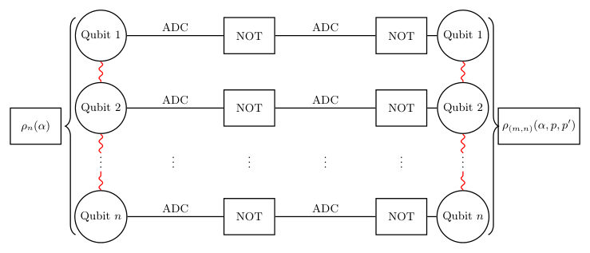
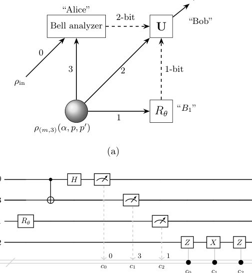
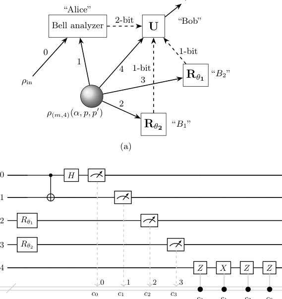
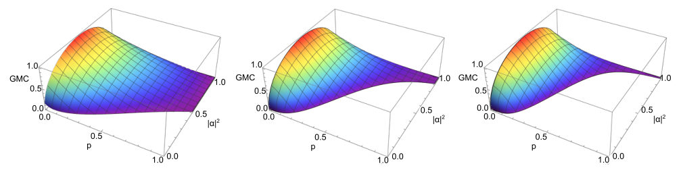
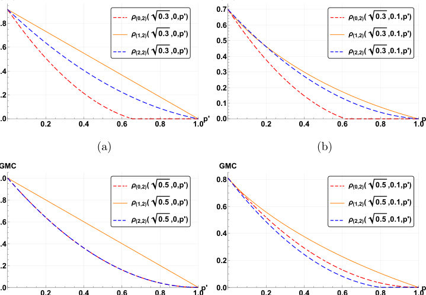
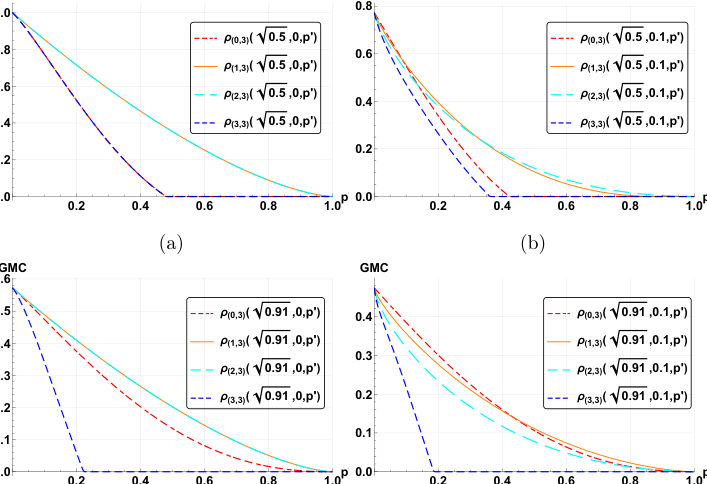
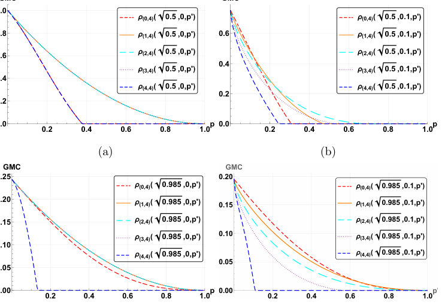
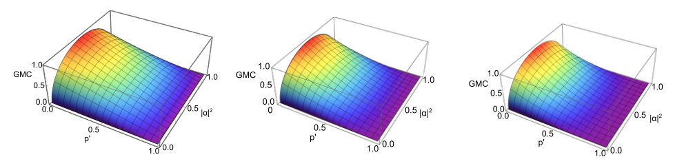
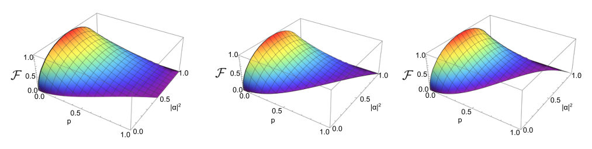
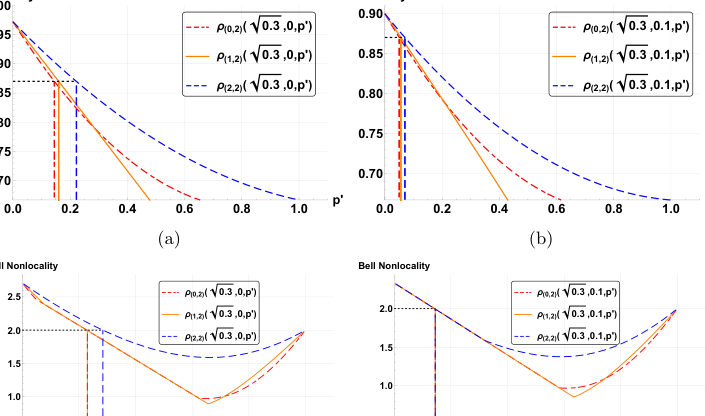
Main problem. Investigating how to mitigate Entanglement Sudden Death (ESD) and preserve the operational utility of multipartite entangled states under amplitude-damping noise.
Main result. Applying local NOT gates can transform entanglement sudden death into asymptotic decay for GMC, though the optimal number of gates depends on the specific noise regime and the metric being preserved (GMC vs. teleportation fidelity).
Method. Analytical derivation of entanglement dynamics and teleportation fidelity using GHZ-symmetric parametrization, twirling operations, and the Horodecki criterion for Bell nonlocality.
Summary. This paper studies how local NOT gates can be used to prevent the abrupt disappearance of entanglement (Entanglement Sudden Death) in 2, 3, and 4-qubit systems under amplitude damping. The authors show that while a single NOT gate can often turn sudden death into a slower asymptotic decay for entanglement, the best strategy for preserving teleportation fidelity may differ. The study highlights a decoupling between the amount of entanglement preserved and the actual utility of the state for quantum communication tasks. The results offer practical guidance for using simple $\pi$-pulses to protect quantum information in noisy hardware.
Model / system. Multipartite GHZ-type and Bell-type states consisting of 2, 3, and 4 qubits subject to a two-stage Amplitude Damping Channel (ADC).
Key observables. Genuine Multipartite Concurrence (GMC), teleportation fidelity (F), Bell-CHSH parameter (S), and Localizable Entanglement (LE).
Important parameters / regimes. Number of qubits (n=2,3,4), number of NOT gates applied (m), damping parameters (p, p'), and initial state population imbalance (alpha).
Assumptions / limitations. Local NOT operations are treated as instantaneous relative to the noise timescale; the ADC is modeled as two sequential, independent processes.
Figures summary. Schematics of the noise/control framework and teleportation protocols; plots of GMC and fidelity dynamics showing ESD vs. ADE; geometric projections of 4-qubit state trajectories in the GHZ-symmetric parameter space; and a summary map of optimal NOT-gate strategies.
Paper structure. The paper introduces the problem of ESD, defines the noise model and control mechanism, provides analytical derivations for entanglement and fidelity, explores the hierarchy of correlations, classifies states using GHZ-symmetric parameters, and concludes with an optimization strategy for gate application.
Why it may be interesting. It provides simple, experimentally accessible unitary control strategies (local bit-flips) to extend the lifetime of quantum resources in noisy environments, which is highly relevant for superconducting and trapped-ion platforms.
We study the entanglement dynamics of $n=2,3,4$-qubit Bell- and GHZ-type states under an amplitude-damping channel (ADC). We quantify multipartite entanglement using the genuine multipartite concurrence (GMC) and evaluate its utility through the optimal teleportation fidelity. For $2$-qubit states, we analyze the standard (Bennett) teleportation protocol. For $3$- and $4$-qubit states, we study controlled quantum teleportation (CQT) with one and two \emph{controllers}, respectively. Entanglement sudden death (ESD) denotes the abrupt, finite-time disappearance of entanglement caused by decoherence in contrast to asymptotic decay. To counteract ESD, we apply local NOT ($\hatσ_x$) operations on $m$ of the $n$ qubits ($m \leq n$) and derive analytic formulae, revealing that a single-NOT operation often suffices to alter ESD into asymptotic decay when handling GMC. In contrast, teleportation fidelity can decay more rapidly for single-NOT flipped states, whereas flipping all qubits is more useful for preserving teleportation fidelity in certain regimes, highlighting that the amount of entanglement alone does not guarantee teleportation utility. Remarkably, in the case of GHZ-type states, ADC-evolved mixed biseparable states can be exploited successfully in the CQT protocol. Further, using the GHZ-symmetric parametrization, we map the 2- and 3-qubit ADC-evolved mixed states onto a $(x,y)$ plane, revealing their SLOCC (Stochastic Local Operations and Classical Communication) entanglement classes. We also explicitly check the Bell-CHSH nonlocality hierarchy in the 2-qubit teleportation alongside localizable-entanglement diagnostics for 3-qubit CQT. Our results clarify the distinct roles of global versus localizable bipartite correlations and suggest simple, experimentally accessible unitary controls for preserving useful quantum resources in noisy channels.
Authors: Gyungmin Cho, Dohun Kim
Type: theory · Category: quantum information and computing · PDF: https://arxiv.org/pdf/2604.24099v1
Analysis basis: full PDF text, analyzed in chunks
Topic relevance: entanglement & information structure 3/5 · quantum measurements 3/5 · measurement-induced transitions 2/5
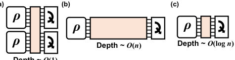
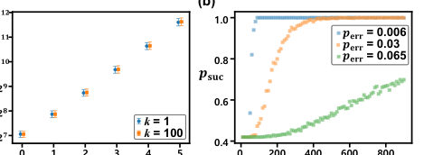
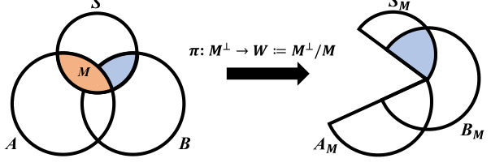
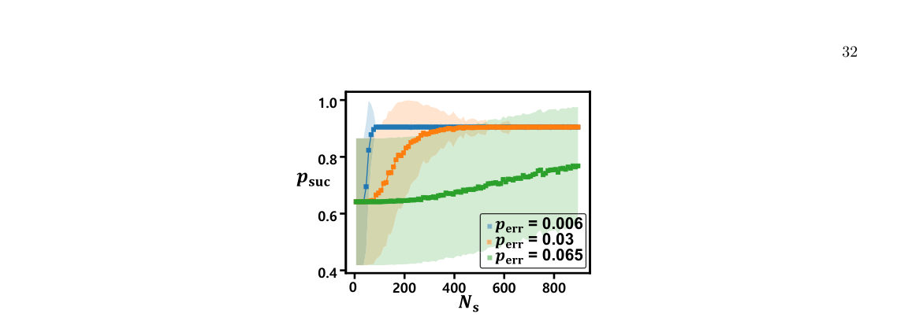
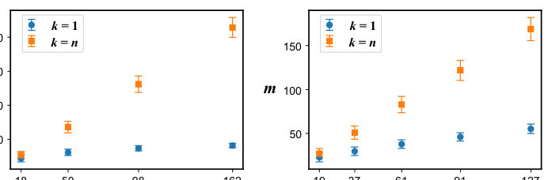
Main problem. The paper investigates the complexity of learning the stabilizer group (Weyl support) of an n-qubit quantum state using single-copy measurements, specifically comparing average-case and worst-case scenarios.
Main result. In the average case, logarithmic-depth local Clifford circuits are sufficient to efficiently learn almost all stabilizer groups with codimension t = O(log n), but in the worst case, any single-copy measurement scheme requires an exponential number of samples in t.
Method. The authors use a block-Clifford ensemble (shallow-depth circuits) and a computational difference sampling technique to extract Pauli symmetries, supported by symplectic geometry and probabilistic analysis.
Summary. This paper addresses the challenge of identifying the hidden Pauli symmetries of a quantum state. It proves that for most states, we can use very shallow, local circuits to learn these symmetries efficiently. However, it also reveals a fundamental bottleneck: for certain 'hard' states like the GHZ state, single-copy measurements are exponentially less efficient than multi-copy methods. This highlights a potential quantum advantage in using entangled measurements for symmetry detection.
Model / system. The study focuses on n-qubit quantum states, specifically t-doped stabilizer states and highly structured states like GHZ, Toric, and Color codes.
Key observables. The Weyl support (Pauli symmetries), Pauli collision coefficient, and the trace of the squared density matrix relative to the learned subspace.
Important parameters / regimes. n (number of qubits), t (codimension of the stabilizer group), k (circuit depth/block size), and epsilon/delta (error and failure parameters).
Assumptions / limitations. The analysis assumes the ability to perform randomized measurements using block-Clifford ensembles and that the block size k divides n.
Figures summary. Figure 1 compares three measurement protocols (Bell, Random Clifford, and Shallow Clifford); Figure 2 shows recovery success vs. number of samples and noise; Figure 3 illustrates the reduction of intersection problems to quotient spaces; Figure 4 and 5 show success probabilities under noise and performance across different code types.
Paper structure. The paper is structured into two parts: Part I establishes an upper bound for the average case using probabilistic arguments and subspace counting; Part II establishes a lower bound for the worst case using reduction to property testing and analyzing the GHZ state.
Why it may be interesting. This is highly relevant for many-body dynamics and topological order, as it provides fundamental limits on how efficiently one can identify hidden symmetries and topological features in quantum systems using local, shallow-depth measurements.
We study single-copy stabilizer learning, the problem of identifying a stabilizer group of dimension $n-t$ from an $n$-qubit quantum state $ρ$. We obtain two complementary results. First, in the average case, logarithmic-depth local Clifford circuits suffice to efficiently learn almost all stabilizer groups with $t=O(\log n)$, instead of the linear-depth measurements required in previous approaches. We support this result with numerical simulations for systems of up to 100 qubits. Second, we show that, in the worst case, any adaptive single-copy measurement scheme requires a number of samples that scales exponentially in $t$. Together with existing results on two-copy learning, our findings suggest that, for large $t$, identifying Pauli symmetries of a quantum system exhibits a quantum advantage in the learning setting.
Authors: Juhee Lee, Seong-Gyu Yang, Ludvig Lizana
Type: theory · Category: statistical mechanics · PDF: https://arxiv.org/pdf/2604.24406v1
Analysis basis: full PDF text, analyzed in chunks
Topic relevance: non-equilibrium dynamics 3/5 · methods for driven-dissipative 2/5 · non-equilibrium universality 2/5
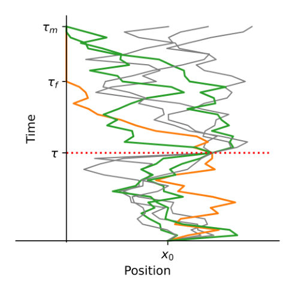
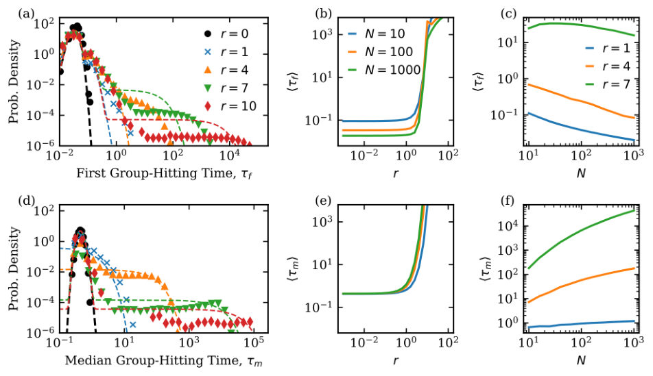
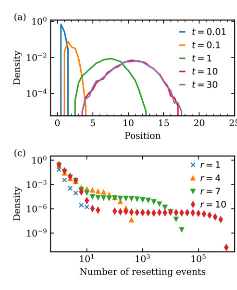
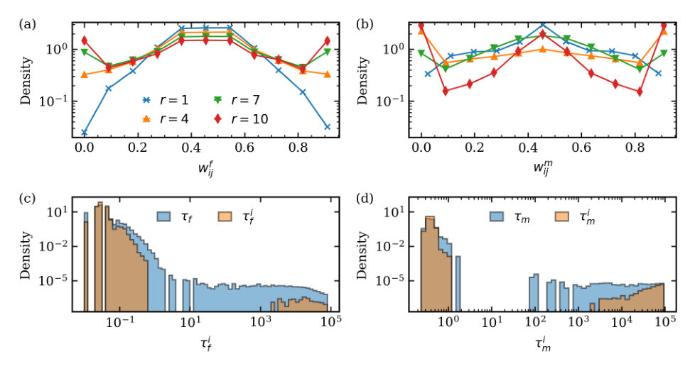
Main problem. Investigating how collective stochastic resetting affects first-passage dynamics and heterogeneity in many-particle interacting systems.
Main result. The study finds that group resetting produces broad hitting-time distributions with heavy tails and extended plateaus, leading to a lack of a single characteristic time scale and high trajectory heterogeneity.
Method. The authors use Langevin equation simulations (Euler-Maruyama method) combined with an analytical theory based on asymptotic behaviors and extreme value theory.
Summary. This paper examines how a 'group resetting' mechanism, where all particles in a system reset to the position of the most extreme particle, affects first-passage times. The researchers show that this protocol creates highly heterogeneous dynamics with arrival time distributions that span several orders of magnitude. They demonstrate that as the resetting rate increases, the mean arrival time can actually diverge. Ultimately, the study highlights that in such many-particle systems, average arrival times are insufficient to characterize the system due to the lack of a single characteristic time scale.
Model / system. A system of N overdamped Brownian particles in a one-dimensional harmonic potential with an absorbing boundary at the origin, subject to a group resetting protocol where all surviving particles relocate to the position of the rightmost particle.
Key observables. First Group Hitting Time (fGHT), Median Group Hitting Time (mGHT), and a Uniformity Index (w_ij) to quantify trajectory dissimilarity.
Important parameters / regimes. Resetting rate (r), group size (N), and the diffusion coefficient (D).
Assumptions / limitations. The analytical derivation assumes the underlying single-particle dynamics follow an Ornstein-Uhlenbeck process (harmonic potential).
Figures summary. Figure 1 shows a schematic of the resetting dynamics and boundary conditions; Figure 2 illustrates hitting-time distributions and the development of plateaus; Figure 3 shows position distributions of the group center of mass.
Paper structure. The paper introduces the problem of collective resetting, defines the physical model and resetting protocol, presents numerical simulations and analytical approximations for hitting-time distributions, analyzes trajectory heterogeneity using a uniformity index, and concludes with the implications for defining characteristic time scales.
Why it may be interesting. This is relevant for researchers in open quantum systems and many-body dynamics as it explores how non-equilibrium resetting protocols can fundamentally alter the collective transport and arrival statistics of a many-body ensemble.
We study how stochastic resetting affects first-passage processes in systems of many interacting particles. While resetting is well understood for single-particle dynamics, its consequences for collective behavior remain less clear. We consider a protocol in which all surviving particles are reset to the position of the most extreme one, motivated by problems in artificial selection and avoidance. Using stochastic simulations of particles diffusing in a confining potential with an absorbing boundary, we examine two notions of arrival: when the first particle reaches the boundary and the point at which half of the particles do. We find that resetting produces broad distributions of arrival times with heavy tails and extended plateaus that span several orders of magnitude. As the resetting rate increases, the mean arrival time grows and diverges beyond a threshold. Trajectory-level analysis also reveals strong heterogeneity, with very short and very long absorption times. These results show that collective resetting lacks a single characteristic time scale and that the definition of arrival is crucial for understanding and controlling such systems.
Authors: Anton F. Burnet, Vansh Kharbanda, David Tobias, Benedikt Sabass
Type: theory · Category: statistical mechanics · PDF: https://arxiv.org/pdf/2604.24553v1
Analysis basis: full PDF text, analyzed in chunks
Topic relevance: non-equilibrium dynamics 3/5 · driven-dissipative phase transition 2/5 · methods for driven-dissipative 2/5
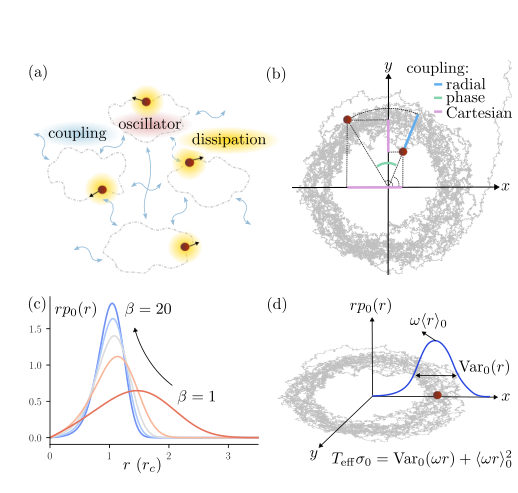
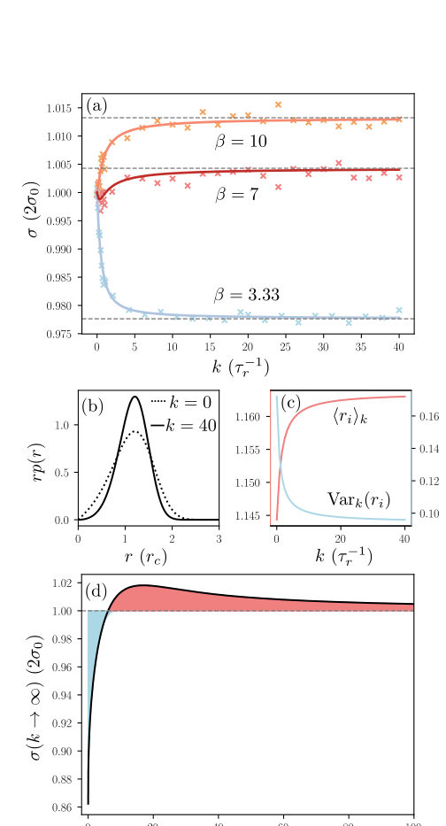
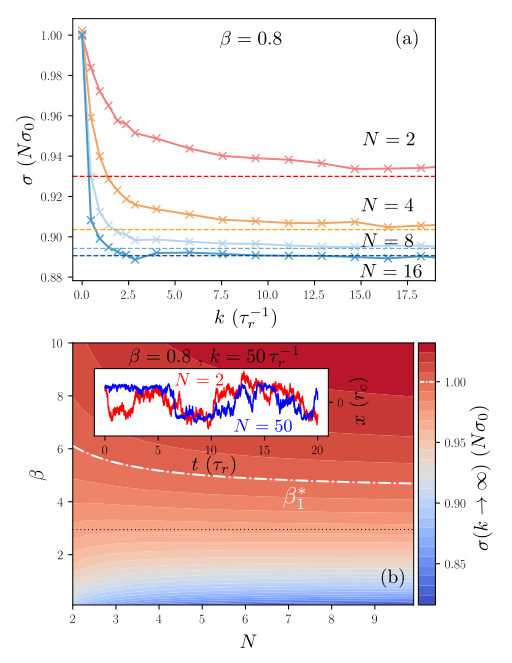
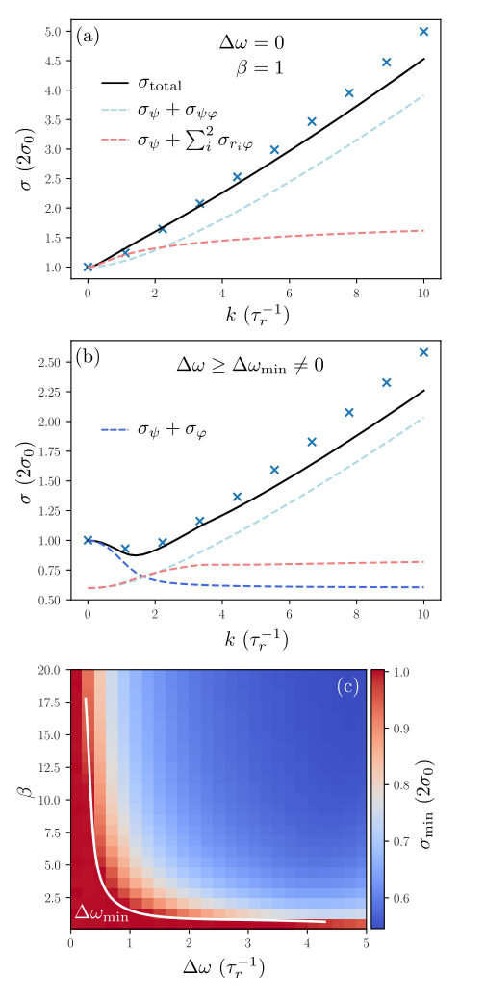
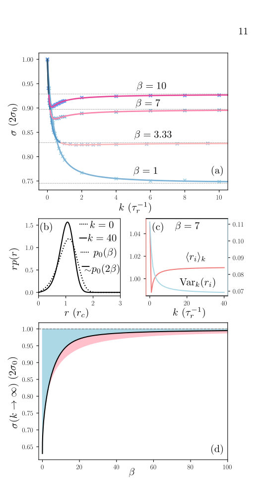
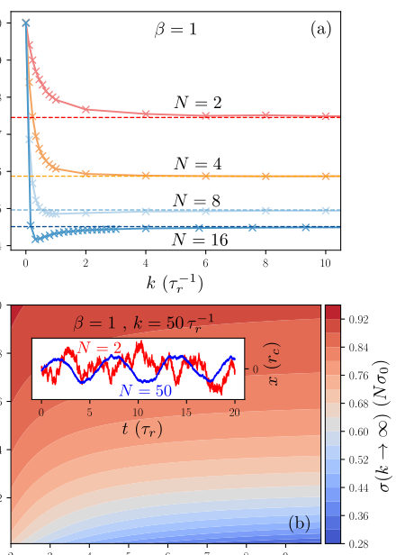
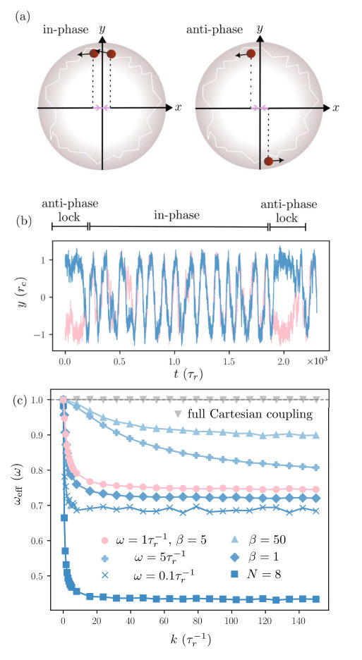
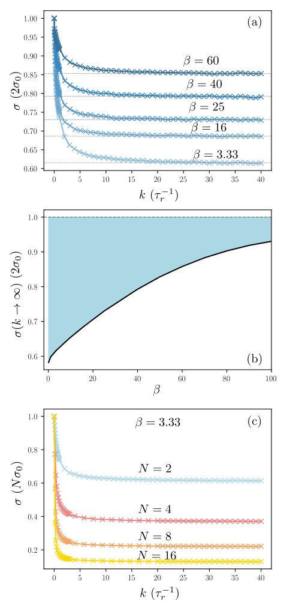
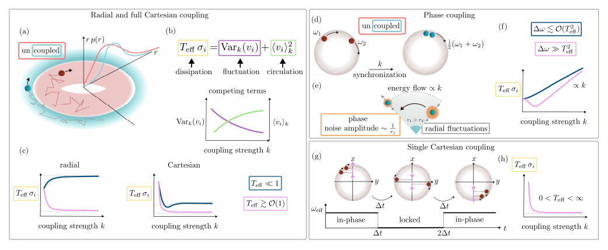
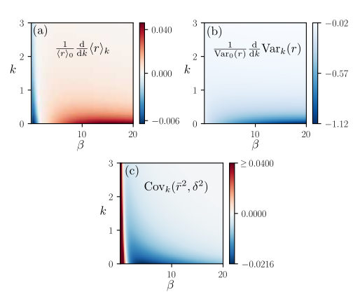
Main problem. The study investigates how different types of mutual coupling (radial, phase, and Cartesian) between stochastic limit-cycle oscillators affect the steady-state entropy production rate (EPR) and energy dissipation.
Main result. The authors find that Cartesian coupling always reduces the EPR relative to the uncoupled system, while radial and phase couplings can either increase or decrease dissipation depending on the effective temperature and system size.
Method. The researchers use analytical derivations via the Fokker-Planck equation and numerical simulations of Langevin equations using the Euler-Maruyama method.
Summary. This paper explores the thermodynamics of coupled stochastic oscillators, specifically focusing on the energy cost of maintaining oscillations. By analyzing different coupling mechanisms, the authors demonstrate that while some couplings can increase dissipation, Cartesian coupling consistently reduces the entropy production rate. The study reveals a complex competition between the suppression of fluctuations and shifts in the radial distribution. These results provide fundamental insights into the energetic efficiency of biological and physical oscillators in noisy environments.
Model / system. An idealized model of stochastic circular limit-cycle oscillators described by overdamped Langevin equations in polar and Cartesian coordinates, including Stuart-Landau dynamics.
Key observables. Steady-state entropy production rate (EPR/sigma), radial probability distribution, tangential velocity fluctuations, and radial variance.
Important parameters / regimes. Coupling strength (k), inverse effective temperature (beta), intrinsic frequency (omega), system size (N), and frequency detuning (delta omega).
Assumptions / limitations. Noise is interpreted in the Stratonovich sense, and the system is assumed to be in a non-equilibrium steady state.
Figures summary. Figure 1 shows a single stochastic oscillator, its trajectory, and radial probability distributions. Figure 2 illustrates EPR vs. coupling strength for different temperatures. Figure 3 shows EPR for phase coupling with varying system sizes. Figure 11 displays gradients of the average radius and radial variance.
Paper structure. The paper begins by defining the single-oscillator model and its energetics, then progresses to analyze radial coupling, followed by phase/Kuramoto-like coupling, and finally examines full Cartesian coupling and network topology effects.
Why it may be interesting. The findings regarding how coupling-induced synchronization can reduce energy dissipation are highly relevant to understanding the energetic costs of maintaining coherence in open quantum systems and many-body driven-dissipative dynamics.
Non-linear oscillators serve important functions in many biological systems, including within the inner ear and neuronal networks. The sustainment of oscillations in noisy environments requires continuous energy dissipation, quantified by the steady-state entropy production rate (EPR). We study an idealized, analytically tractable model of a stochastic circular limit cycle and examine how mutual coupling in pairs and populations alters dissipation. For a single oscillator, the EPR depends on three key factors: intrinsic frequency, tangential velocity fluctuations, and mean tangential velocity. The dynamics are characterized by a dimensionless effective temperature given by the ratio of intrinsic relaxation and diffusion timescales. For radial (amplitude), phase (Kuramoto-like), and Cartesian couplings, we derive analytical expressions for the EPR and confirm them numerically. Varying the effective temperature and system size strongly influences how the EPR depends on coupling strength and, in some cases, results in qualitatively distinct behaviors. Moreover, the coupling types affect the tangential velocity distributions differently. Notably, in all cases studied, Cartesian coupling reduces the EPR relative to the uncoupled system, irrespective of effective temperature and system size. The analysis of idealized non-linear oscillators reveals that different classes of coupling interactions and competing timescales present in the oscillators have distinct effects on energy dissipation.
Authors: Koichi Miyamoto
Type: theory · Category: quantum information and computing · PDF: https://arxiv.org/pdf/2604.24133v1
Analysis basis: full PDF text, analyzed in chunks
Topic relevance: methods for driven-dissipative 3/5 · non-equilibrium dynamics 2/5 · quantum measurements 2/5
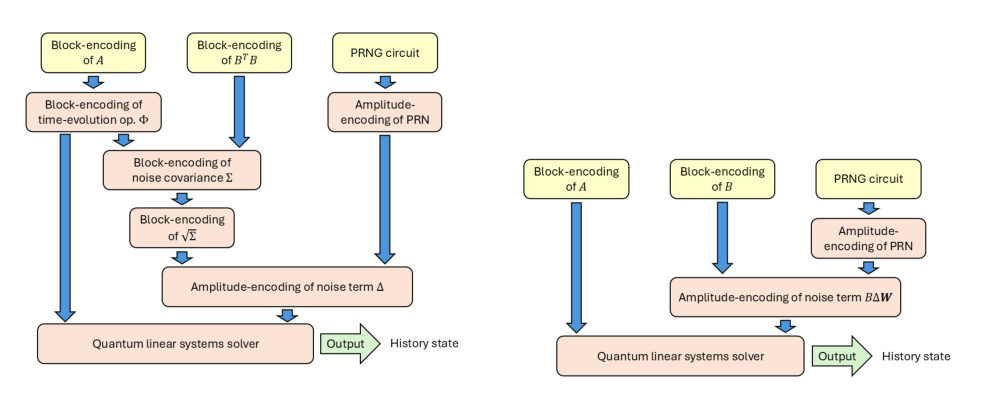
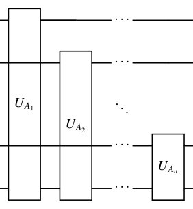
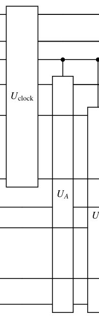
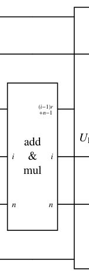
Main problem. Developing quantum algorithms to solve high-dimensional linear stochastic differential equations (SDEs) with an exponential speed-up in the dimension N, specifically addressing the challenge of amplitude encoding the noise term.
Main result. The paper proposes two methods (Dyson series-based and Euler-Maruyama-based) that achieve polylog(N) query complexity, providing an exponential speed-up in the dimension N compared to classical methods.
Method. The algorithms utilize amplitude encoding of the noise term via a quantum pseudorandom number generator (PRNG), quantum linear systems solvers (QLSS), and block-encoding techniques like the Linear Combination of Unitaries (LCU).
Summary. This paper presents new quantum algorithms for solving high-dimensional linear stochastic differential equations. By using amplitude encoding for the noise term and a quantum PRNG, the authors achieve an exponential speed-up in the system dimension N. They propose two distinct approaches: one based on the Dyson series and another based on the Euler-Maruyama discretization. The work also provides methods for estimating expectations of functions of the solution at various time points.
Model / system. The model consists of high-dimensional linear SDEs of the form dX_t = A(t)X_t dt + B(t)dW_t, where X_t is an N-dimensional random process driven by m-dimensional Brownian motion.
Key observables. Expectations of functions of X_t at multiple time steps (history states) and expectations of quantities defined at the terminal time.
Important parameters / regimes. Dimension N, dimension of Brownian motion m, time interval [0, T], error tolerance epsilon, and stability/dissipativity parameter eta.
Assumptions / limitations. Assumes access to oracles for arithmetic operations and data loading, a bounded norm for the drift matrix A(t), and a bounded noise coefficient B(t).
Figures summary. Figure 1 provides a schematic outline of the Dyson and EM-based methods; Figure 2 illustrates the quantum circuit for block-encoding a product of matrices; Figure 3 shows the circuit implementation of the operator.
Paper structure. The paper introduces the SDE problem, presents two algorithmic approaches (Dyson-based and EM-based), details the construction of quantum oracles and block-encodings, provides rigorous error analysis and complexity bounds, and concludes with discussions on limitations and future extensions.
Why it may be interesting. This is highly relevant for researchers in open quantum systems and many-body dynamics, as SDEs are fundamental for modeling dissipative dynamics, and efficient quantum algorithms for high-dimensional stochastic processes are crucial for simulating complex quantum trajectories.
This work studies quantum algorithms to solve high-dimensional stochastic differential equations (SDEs) $\mathrm{d} \mathbf{X}_t = A(t) \mathbf{X}_t \mathrm{d} t + B(t) \mathrm{d} \mathbf{W}_t$. Aiming for a speed-up in the dimension $N$ of $\mathbf{X}_t$, we generate quantum states that encode $\mathbf{X}_t$ in the amplitudes, while most of the existing quantum methods for SDEs employ binary encoding. A key challenge is the amplitude encoding of the noise term, and we address this by utilizing the quantum circuit implementation of a pseudorandom number generator (PRNG). We propose two methods: the Dyson series-based method and the Euler-Maruyama (EM)-based method. In the former, we express the noise term via the Dyson series approximation of the time evolution operator, while in the latter, it is approximated using the EM time discretization. Both methods use the quantum linear systems solver to generate the amplitude-encoding state of $\mathbf{X}_t$, making only ${\rm polylog}(N)$ queries to the PRNG circuit and the block-encodings of $A$ and $B$. Additionally, going beyond state preparation, we present methods to estimate expectations of functions of $\mathbf{X}_t$ using the state.
Authors: Xiaoyu Ma, Qing-Hua Zhang, Cong Xu
Type: theory · Category: quantum information and computing · PDF: https://arxiv.org/pdf/2604.23501v1
Analysis basis: full PDF text, analyzed in chunks
Topic relevance: entanglement & information structure 3/5 · methods for driven-dissipative 2/5 · quantum measurements 2/5
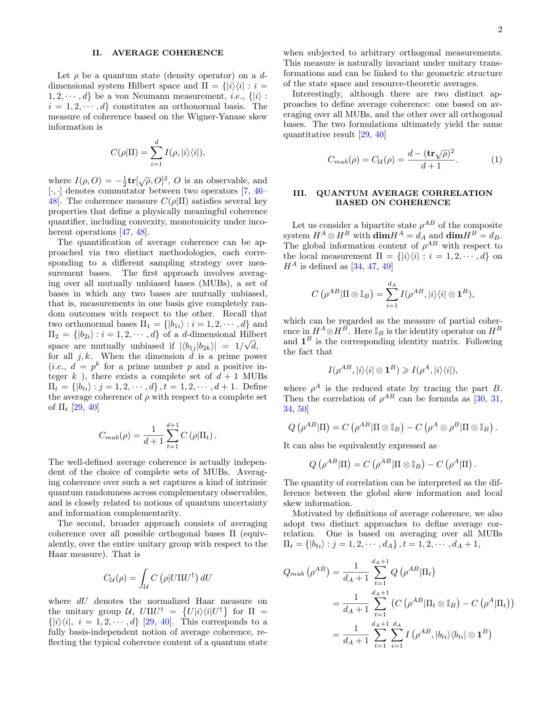
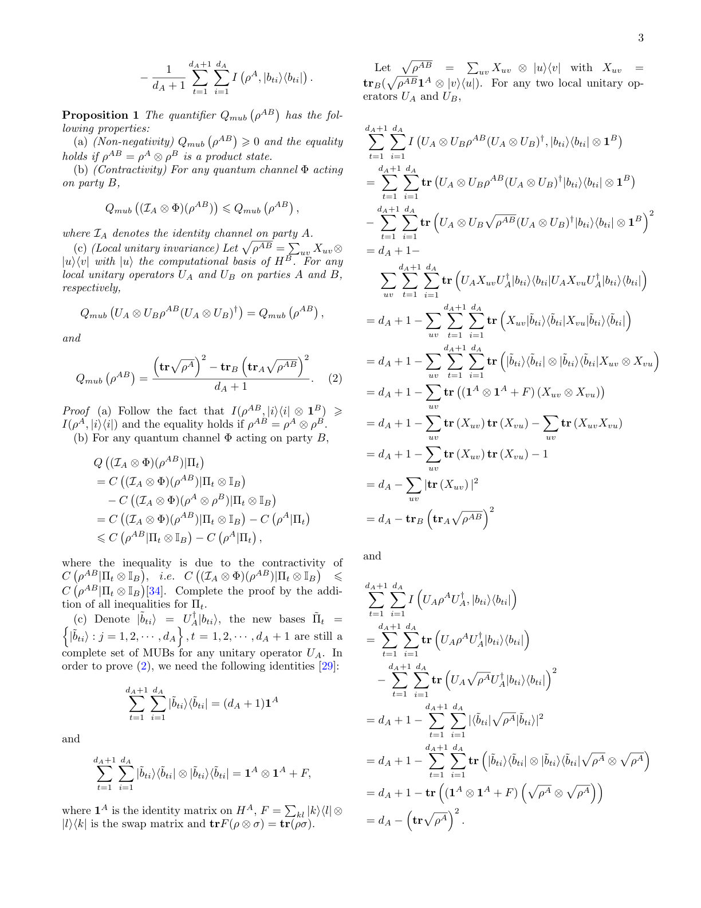
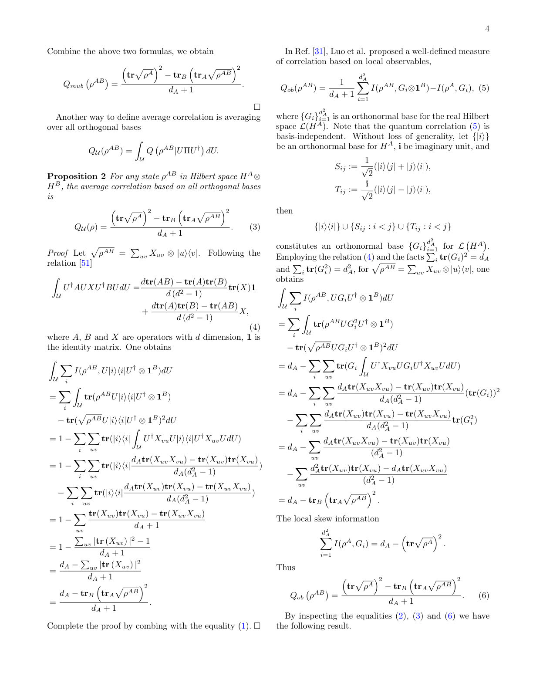
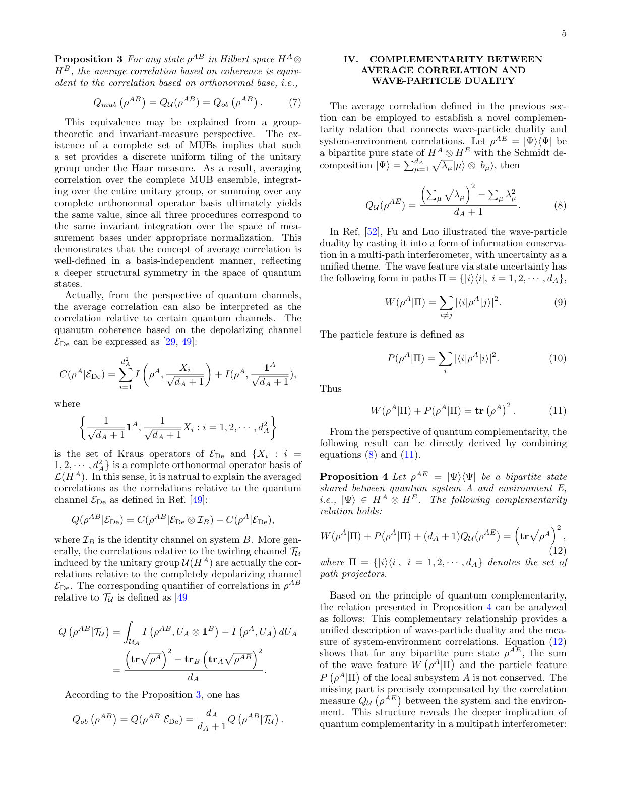
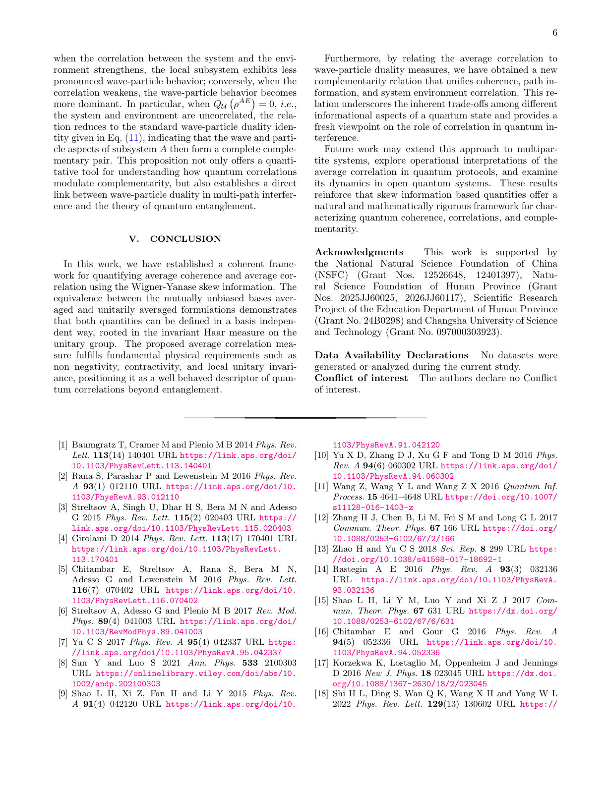
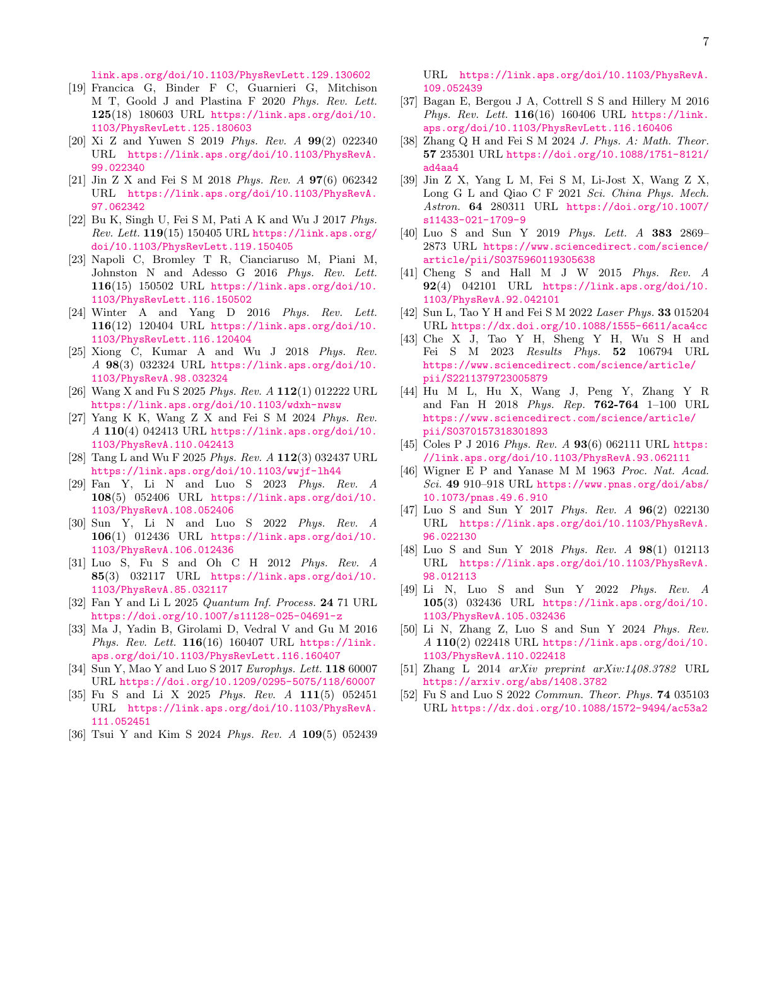
Main problem. The paper aims to develop a basis-independent (intrinsic) quantum correlation measure for bipartite systems to address the basis-dependent nature of existing measures.
Main result. The authors prove the equivalence of average correlation measures defined via MUBs, unitary group integration, and orthonormal bases, and derive a complementarity relation linking wave-particle duality to system-environment correlations.
Method. The study utilizes the Wigner-Yanase skew information framework, applying Haar measure integration over the unitary group and summation over Mutually Unbiased Bases (MUBs).
Summary. This paper introduces a new way to measure quantum correlations that does not depend on the choice of basis. By using Wigner-Yanases skew information, the authors show that averaging over different sets of bases (like MUBs or all possible unitaries) yields the same correlation value. They also discover a new rule for quantum systems: the loss of local wave-particle duality is exactly balanced by the correlation between the system and its environment. This provides a deeper understanding of how entanglement and correlations affect local quantum properties.
Model / system. The study focuses on bipartite quantum systems (rho_AB) and bipartite pure states (rho_AE) within a composite Hilbert space, specifically considering multi-path interferometry contexts.
Key observables. Wigner-Yanase skew information, average coherence, quantum average correlation, wave feature (W), and particle feature (P).
Important parameters / regimes. Hilbert space dimensions (dA, dB), Schmidt coefficients (lambda_mu), and the existence of complete sets of MUBs for prime power dimensions.
Assumptions / limitations. The existence of a complete set of Mutually Unbiased Bases (MUBs) is assumed for dimensions that are prime powers.
Paper structure. The paper introduces the problem of basis-dependence, defines average coherence and correlation using skew information, proves the mathematical equivalence of different averaging methods, establishes the properties of the new correlation measure, and concludes with a complementarity relation for wave-particle duality.
Why it may be interesting. It provides a fundamental link between local wave-particle duality and global system-environment correlations, offering a new way to quantify how information is lost to the environment in open quantum systems.
This paper studies the quantification and structural properties of quantum average correlation based on average coherence. Motivated by two mathematically equivalent approaches to define average coherence: one by averaging over complete sets of mutually unbiased bases, and the other by integrating over all orthogonal bases under the Haar measure, we define an average correlation for bipartite systems as the difference between global and local skew information. This correlation measure is shown to satisfy essential properties including non negativity, contractivity under local quantum channels, and local unitary invariance. We further prove the equivalence between the average correlation defined via mutually unbiased bases and that defined via unitary groups. Finally, we derive a complementarity relation that connects wave-particle duality with the average correlation between a system and its environment.
Authors: Victor Henner, Alexander Nepomnyashchy, Tatyana Belozerova
Type: theory · Category: numerical methods · PDF: https://arxiv.org/pdf/2604.24603v1
Analysis basis: full PDF text, analyzed in chunks
Topic relevance: non-equilibrium dynamics 3/5 · entanglement & information structure 2/5 · scars & prethermalization 2/5
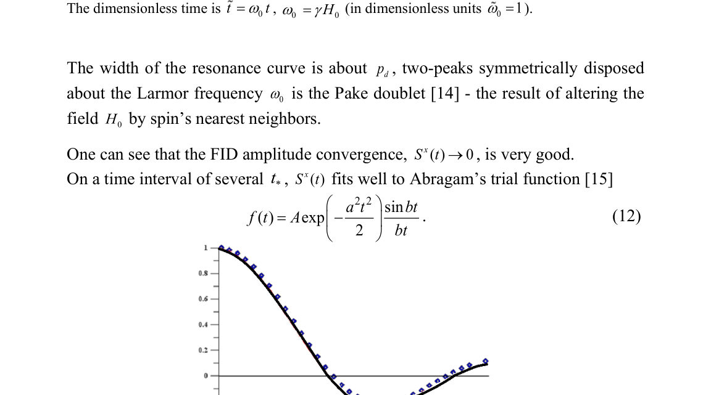
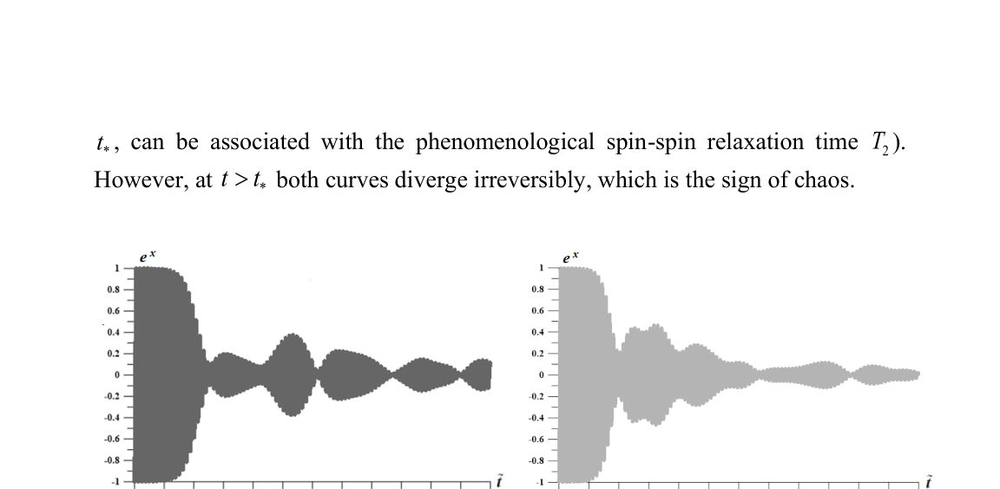
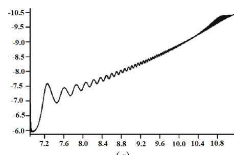
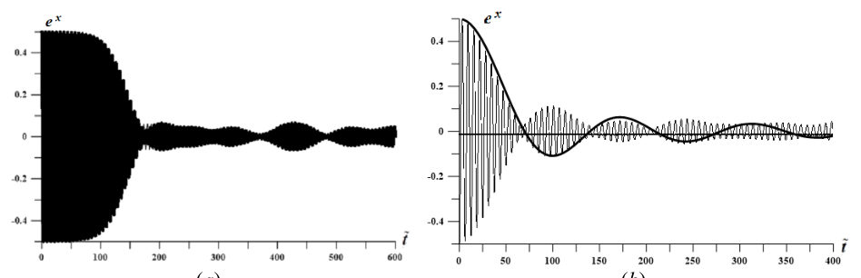
Main problem. Investigating the discrepancies between quantum and classical descriptions of spin dynamics in dipole-coupled systems, specifically regarding the onset of chaos and long-term fidelity.
Main result. While quantum and classical simulations show qualitative agreement at short timescales, they diverge significantly at long timescales due to the nonlinearity of classical dynamics, which leads to chaos and a continuous frequency spectrum.
Method. The study compares exact diagonalization of the Schrödinger equation for quantum spins with numerical integration of nonlinear gyration equations for classical spins, using Lyapunov exponents to quantify chaos.
Summary. This paper compares quantum and classical simulations of dipole-coupled spin systems. It demonstrates that while classical models can approximate quantum dynamics for short periods, they fail at longer timescales because classical nonlinear dynamics lead to chaos and continuous spectra. The authors use Lyapunov exponents to show that classical systems become chaotic for more than three spins, whereas quantum systems remain regular. This research highlights the fundamental limitations of using classical spin-dynamics simulations to represent quantum many-body systems.
Model / system. A system of N interacting spins (spin-1/2 for quantum, magnetic vectors for classical) in a regular lattice, governed by a Hamiltonian containing a Zeeman term and a dipole-dipole interaction term.
Key observables. Free Induction Decay (FID) of transverse magnetization, Fourier transform of the FID (frequency spectrum), and the maximum Lyapunov exponent.
Important parameters / regimes. Dimensionless dipole interaction parameter (dp), number of spins (N), and the characteristic dipole time (t*).
Assumptions / limitations. The system is assumed to be a rigid lattice, spin-lattice relaxation is neglected, and the classical model relies on a mean-field approximation.
Figures summary. Figures show the time evolution and Fourier transforms of FID for various N, comparisons with Abragam's trial function, the divergence of classical trajectories signaling chaos, and the scaling of the Lyapunov exponent.
Paper structure. The paper introduces the problem of quantum-classical spin discrepancies, details the quantum and classical models, presents results on FID and spectral features, analyzes the onset of chaos via Lyapunov exponents, and provides an analytical study of the two-spin case in an appendix.
Why it may be interesting. It provides critical insights into the validity of using classical approximations for many-body spin dynamics and highlights how nonlinearity-induced chaos in classical models can obscure quantum spectral features.
We investigate the spin dynamics of a dipole-coupled system by comparing a direct solution of the Schrodinger equation for quantum spins with simulations of classical spins. Although classical spins have long been used in microscopic spin dynamics simulations, we demonstrate that their results differ significantly from those of quantum spins. Using Free Induction Decay as a benchmark, we find that while the overall patterns are qualitatively similar, significant discrepancies emerge at both short and long timescales. We trace these differences to fundamental distinctions in the two descriptions.
Authors: Du Ran, Reuven Ianconescu, Shuai Liu, Ya-dong Li, Ji-Yuan Bai, Ze-Long He, Zhi-Cheng Shi, Yan Xia, Avraham Gover
Type: theory · Category: quantum information and computing · PDF: https://arxiv.org/pdf/2604.22974v1
Analysis basis: full PDF text, analyzed in chunks
Topic relevance: entanglement & information structure 3/5 · quantum measurements 3/5
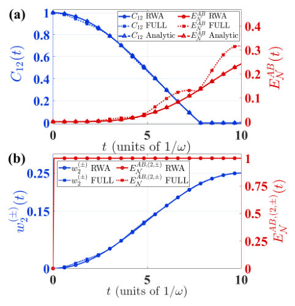
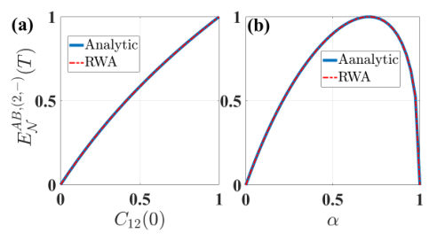
Main problem. Developing a protocol to transfer entanglement from an existing entangled atomic two-level-system (TLS) resource to a pair of free electrons in quantum electron optics.
Main result. The protocol achieves heralded entanglement transfer where the final electron entanglement is determined solely by the initial TLS concurrence, following the relation E_AB = log2(1 + C_12).
Method. The authors use analytical derivations in the rotating-wave approximation (RWA) and compare them with numerical integration of the full bilinear Hamiltonian to quantify corrections.
Summary. This paper proposes a method to transfer quantum entanglement from an atomic pair to free electrons. By measuring the atoms after the interaction (heralding), one can certify the creation of an entangled electron state. The study shows that the amount of entanglement transferred depends directly on the initial atomic entanglement. The authors also quantify how much the results deviate from ideal models due to detuning and higher-order physical effects.
Model / system. The system consists of two spatially separated free electrons interacting with two spatially separated atomic two-level systems (TLS) via Coulombic dipole coupling, modeled using an energy-sideband ladder.
Key observables. TLS concurrence (C_12), electron logarithmic negativity (E_AB^N), heralding probability, and target-manifold weight.
Important parameters / regimes. Detuning (delta), pulse area (g), interaction time (T), and the initial TLS entanglement (alpha, beta).
Assumptions / limitations. The primary analytical framework relies on the Rotating-Wave Approximation (RWA) and a discrete-sideband plane-wave approximation.
Figures summary. Figure 1(a) shows the time-resolved dynamics of the decreasing TLS concurrence.
Paper structure. The paper introduces the entanglement transfer problem, defines the Hamiltonian and interaction model, derives analytical solutions under RWA, performs numerical benchmarking against the full model, and discusses systematic corrections and future extensions.
Why it may be interesting. It provides a theoretical blueprint for generating entanglement in free-electron systems, a key platform for quantum electron optics, and explores the fundamental limits of entanglement transfer via heralded measurements.
We propose a protocol that transfers entanglement from an entangled atomic two-level-system (TLS) resource to a pair of free electrons in an energy-sideband ladder via local electron-TLS interactions. In a controlled rotating-wave regime, closed-form reduced states are derived. TLS heralding then prepares a maximally entangled electron state in a two-dimensional single-excitation manifold, with a simple dependence on the initial TLS resource entanglement. Numerical integration of the full bilinear Hamiltonian quantifies the impacts of detuning and pulse shaping and identifies the leading beyond-rotating-wave corrections. The results establish a heralded route to entangled free electrons and will facilitate further advances in quantum electron optics.
Authors: Soumyabrata Saha, Jitendra Kethepalli, Benjamin Guiselin, Jacopo De Nardis, Tridib Sadhu
Type: theory · Category: statistical mechanics · PDF: https://arxiv.org/pdf/2604.24741v1
Analysis basis: full PDF text, analyzed in chunks
Topic relevance: non-equilibrium dynamics 3/5 · non-equilibrium universality 3/5
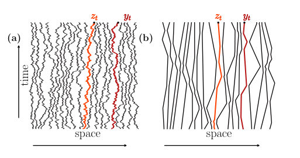
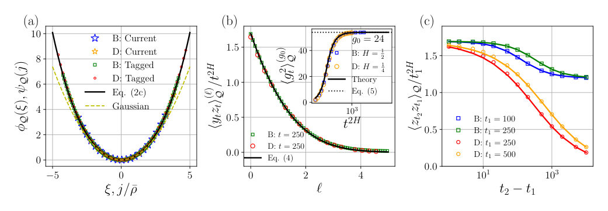
Main problem. Investigating whether an emergent universality exists in the large-scale, long-time statistics of tracer particles in single-file transport, specifically comparing stochastic (diffusive) and unitary (ballistic) dynamics.
Main result. The authors uncover that the one-time joint distribution of multiple tracers exhibits identical non-Gaussian fluctuations for both diffusive and ballistic gases, up to a simple dynamical scaling, though differences appear in multi-time statistics.
Method. The study employs exact microscopic solutions, hydrodynamic approaches (MFT and BMFT), and rare-event numerical simulations using importance sampling and multi-histogram reweighting.
Summary. This paper demonstrates a surprising universality in single-file transport where fundamentally different microscopic dynamics—stochastic diffusion and ballistic motion—produce identical one-time statistics for tracer particles. By using both exact analytical methods and advanced rare-event simulations, the authors show that the large-deviation functions for particle positions and currents are the same up to scaling. This universality holds for both annealed and quenched initial conditions, though the distinction between the two dynamics is preserved in multi-time correlations and aging effects.
Model / system. A one-dimensional hard-rod gas with finite particle length 'a' subject to either diffusive (Brownian) or ballistic (velocity-exchange) dynamics in both annealed and quenched ensembles.
Key observables. One-time tracer position, joint distribution of tracer pairs, two-time statistics of a single tracer, and time-integrated current.
Important parameters / regimes. Scaling exponent H (1/4 for diffusive, 1/2 for ballistic), rod length 'a', density 'rho', and diffusion coefficient 'D0'.
Assumptions / limitations. The analysis assumes the large-time and large-system limits and relies on a coordinate transformation mapping hard rods to non-interacting point particles.
Figures summary. Figure 1 shows schematic trajectories of diffusive vs. ballistic motion; Figure 2 presents numerical and analytical results for the Large Deviation Function (LDF) of tracers and currents, as well as equal-time and two-time covariances.
Paper structure. The paper introduces the problem of universality in single-file transport, details the two dynamical models, presents analytical derivations using microscopic and hydrodynamic methods, provides numerical validation via rare-event simulations, and concludes with discussion on the breakdown of universality in multi-time statistics.
We uncover an emergent universality in the large-scale, long-time statistics of a one-dimensional hard-rod gas evolving under two fundamentally different classes of microscopic dynamics: stochastic (diffusive) and unitary (ballistic). Remarkably, despite the difference of the two systems, the one-time joint distribution of the positions of multiple tracers exhibits identical non-Gaussian fluctuations, up to a simple dynamical scaling. This universality holds in both annealed and quenched ensembles, demonstrating a persistent memory of the initial state. Differences between the dynamics manifest at large scales only in multi-time statistics. Our conclusions are based on explicit large-deviation results for the one-time statistics of tracer pairs and the two-time statistics of a single tracer. Similar physics extends to current fluctuations, demonstrated explicitly in the quenched ensemble. We obtain these results from exact microscopic solutions for both dynamics and, independently, from fluctuating hydrodynamics in the ballistic case in the annealed ensemble. Our rare-event simulations further corroborate these findings and provide a novel demonstration of sampling atypical fluctuations in both types of hard-rod gas.
Authors: Jiaqi Leng, Jiaqing Jiang, Lin Lin
Type: theory · Category: quantum information and computing · PDF: https://arxiv.org/pdf/2604.22996v1
Analysis basis: full PDF text, analyzed in chunks
Topic relevance: methods for driven-dissipative 3/5 · non-equilibrium dynamics 2/5
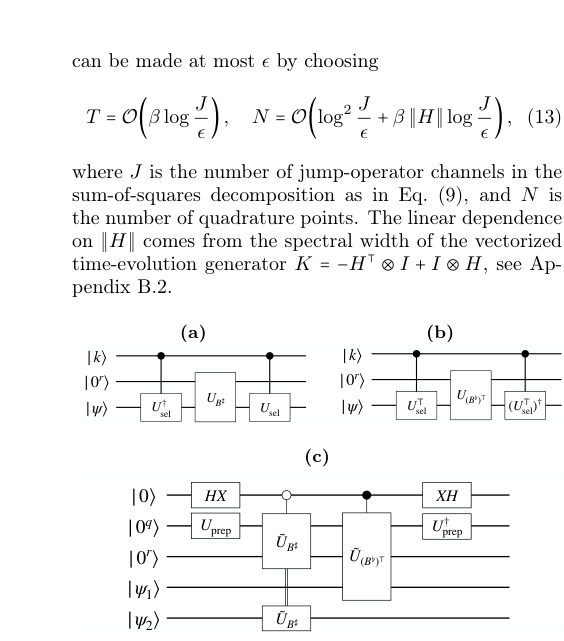
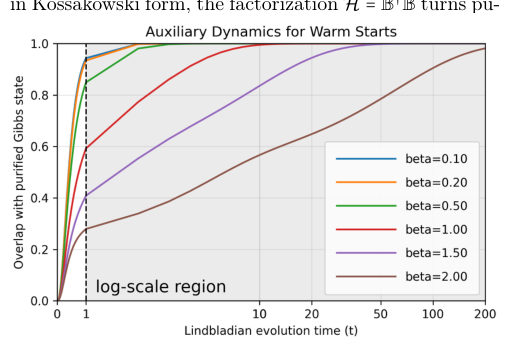
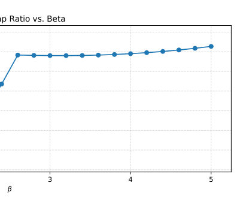
Main problem. The challenge of efficiently preparing purified Gibbs states on a quantum computer, specifically overcoming the quadratic dependence on the spectral gap found in standard Szegedy-type quantum walk approaches.
Main result. The authors present a walk-free quantum algorithm that achieves a quadratic improvement in spectral gap dependence, reducing it from O(1/Delta) to O(1/sqrt(Delta)), and introduce a warm-start strategy using auxiliary dissipative dynamics.
Method. The algorithm uses a singular-value filtering approach via Quantum Singular Value Transformation (QSVT) applied to an explicit factorization of the parent Hamiltonian into non-commutative first-order operators.
Summary. This paper introduces a new quantum algorithm for preparing thermal (Gibbs) states that is faster than previous quantum walk-based methods. By using a mathematical factorization of the system's Hamiltonian, the authors reduce the computational complexity related to the spectral gap from 1/Delta to 1/sqrt(Delta). They also provide a method to generate good starting states for the algorithm using auxiliary dissipative dynamics. This advancement makes the simulation of many-body systems at finite temperatures more efficient on future quantum hardware.
Model / system. Quantum many-body systems at finite temperature governed by Lindbladian dynamics that satisfy the Kubo-Martin-Schwinger (KMS) detailed balance condition, including Davies and CKG samplers.
Key observables. Thermal expectation values of observables, spectral gap (Delta), and overlap between the prepared state and the target purified Gibbs state.
Important parameters / regimes. Inverse temperature (beta), spectral gap (Delta), precision (epsilon), and the number of jump operators (J).
Assumptions / limitations. The Lindbladian must satisfy the KMS detailed balance condition and require coherent access to the first-order factors and a warm-start initial state.
Figures summary. Numerical simulations of the Transverse-Field Ising Model (TFIM) showing the overlap of auxiliary dynamics with the target state as a function of time and temperature, and a comparison of spectral gaps for different Lindbladian classes.
Paper structure. The paper introduces the problem of Gibbs sampling speedups, presents a mathematical factorization of the parent Hamiltonian, develops the QSVT-based algorithm, proposes an auxiliary dynamics for warm-starting, and validates the approach with numerical simulations on the TFIM.
Why it may be interesting. This work is highly relevant for researchers in open quantum systems and many-body dynamics as it provides a more efficient way to simulate thermal equilibrium states and addresses the practical difficulty of state preparation in the low-temperature regime.
Szegedy's quantum walk gives a generic quadratic speedup for reversible classical Markov chains, but extending this mechanism to quantum Gibbs sampling has remained challenging beyond special cases. We present a walk-free quantum algorithm for preparing purified Gibbs states with a quadratic improvement in spectral-gap dependence for a broad class of quantum Gibbs samplers that satisfy exact Kubo-Martin-Schwinger detailed balance. Our main structural result is an explicit factorization of the corresponding parent Hamiltonian into noncommutative first-order operators. This turns purified Gibbs-state preparation into a singular-value filtering problem and enables a quantum singular value transformation algorithm with quadratically improved gap dependence under standard coherent-access assumptions. The framework applies to several efficiently implementable Gibbs samplers beyond the Davies setting. We also introduce an auxiliary dissipative dynamics based on the same factorization, which can be used to generate warm starts in the doubled Hilbert space in metastable regimes.
Authors: Ali Can Günhan, Semahi Serhat Aksoy, Zafer Gedik
Type: theory · Category: quantum information and computing · PDF: https://arxiv.org/pdf/2604.23898v1
Analysis basis: full PDF text, analyzed in chunks
Topic relevance: entanglement & information structure 3/5 · quantum measurements 2/5
Main problem. The paper seeks to unify various indicators of Kochen-Specker contextuality into a single framework based on a projector overlap matrix and investigates the relationship between state-independent geometric properties and state-dependent contextuality witnesses.
Main result. The authors establish that the quantity S2 (derived from the overlap matrix) is a necessary configuration-level condition for observable contextuality and can remain positive even when state-dependent witnesses are silent. They also identify a structural mechanism (shared eigenstates) that explains why certain entropic uncertainty relations fail to detect contextuality in the KCBS scenario.
Method. The study uses a geometric framework involving a projector overlap matrix T, analyzing scalar contractions such as mutual information energy E and the Maassen-Uffink extremal overlap cMU. Analytical derivations and numerical evaluations are applied to KCBS and CHSH scenarios.
Summary. This paper introduces a new, state-independent indicator of quantum contextuality based on the geometric overlap of projectors. By analyzing the 'Projector Overlap Matrix,' the authors show that certain geometric properties can signal the presence of contextuality even when traditional, state-dependent witnesses fail to detect it. The work provides a unified view of several known contextuality measures and explains the failure of certain entropic uncertainty relations in specific spin-1 configurations.
Model / system. The research focuses on finite-dimensional Hilbert spaces, specifically the spin-1 KCBS pentagon (5-cycle) and the two-qubit CHSH 4-cycle configuration.
Key observables. KCBS correlator (chi), contextual fraction (CF), Shannon-entropic n-cycle inequality, operational commutator witness (D), and the projector overlap entropy (S2).
Important parameters / regimes. The mixing parameter p (controlling state purity), the Maassen-Uffink parameter cMU, and the angular configurations of observables in the CHSH and KCBS scenarios.
Assumptions / limitations. The framework assumes the existence of compatible observable pairs within measurement contexts and focuses on specific n-cycle geometries.
Figures summary. The figures illustrate the relationship between different contextuality witnesses, the trade-off between Bell-inequality violation and entropic-inequality violation in the CHSH scenario, and the scaling of entropy for large n-cycles.
Paper structure. The paper introduces a unified framework using the overlap matrix, defines key scalar contractions, proves properties like monotonicity and additive exactness, and then applies the framework to the KCBS and CHSH scenarios to compare state-independent and state-dependent indicators.
Why it may be interesting. This paper provides a deep geometric understanding of contextuality, which is fundamental to quantum information processing and the study of non-classical correlations in many-body systems.
We place several known indicators of Kochen--Specker contextuality -- the KCBS correlator $χ$, the contextual fraction $\CF$, the Shannon-entropic $n$-cycle inequality of Chaves and Fritz, and the operational commutator witness $D$ of Paper~I -- into a single projector-geometric framework organized around the overlap matrix $\Tcal_{ij} = d^{-1}\tr[(\hat P_i \hat Q_j)^2]$, where $\hat P_i$ and $\hat Q_j$ are the joint-eigenspace projectors of the two compatible observable pairs within a measurement context. The state-independent scalar content of $\Tcal$ is carried by two independent contractions: the mutual information energy $E = \sum_{ij}\Tcal_{ij}$ of Paper~I (equivalently, its logarithmic form $S_2 = -\log_2 E$), and the Maassen--Uffink extremal overlap $c_\MU = \max_{i,j}|\langle a_i,b_i | c_j,b_j\rangle|$. We prove that $S_2$ is non-increasing under coarse-graining, that $S_2(\Gcal) = 0$ is a necessary configuration-level condition for observable contextuality, and that the additive composition $S_2(\Gcal) = \sum_αS_2(\Gcal_α)$ is exact for the KCBS pentagon. We further show that in the spin-$1$ realization of the KCBS pentagon, a shared $m_s=0$ eigenstate in each context forces $c_\MU = 1$, rendering every Maassen--Uffink-type bound trivial -- a structural mechanism that makes explicit why outcome-entropic uncertainty relations based on $c_\MU$ are silent on KCBS contextuality, while $S_2 \approx 2.7266$~bits throughout. Applied to KCBS and CHSH, the framework identifies regimes in which every state-dependent witness considered here is silent yet $S_2(\Gcal) > 0$ by an amount set by the projector geometry alone.
Authors: Ryosuke Nogami, Jaeha Lee
Type: theory · Category: quantum information and computing · PDF: https://arxiv.org/pdf/2604.24423v1
Analysis basis: full PDF text, analyzed in chunks
Topic relevance: entanglement & information structure 3/5 · quantum measurements 2/5
Main problem. The paper aims to provide a dualistic operational characterization of device-dependent correlation sets (separable, quantum, and maximal) within the (2,m,2) Bell scenario.
Main result. The authors derive explicit formulae for the support and gauge functions of these correlation sets, establishing that detection sensitivity for entanglement and beyond-quantum states is fundamentally limited by the number of linearly independent measurement directions.
Method. The study employs convex analysis, utilizing support functions for entanglement witnessing and gauge functions for quantifying noise robustness, alongside matrix algebra and Singular Value Decomposition (SVD).
Summary. This paper provides a complete geometric and operational characterization of correlation sets in the (2,m,2) Bell scenario. By using convex analysis, the authors derive explicit formulas for support and gauge functions that allow for optimal entanglement witnessing and noise robustness quantification. They show that the ability to detect entanglement or beyond-quantum correlations depends directly on the number of linearly independent measurement directions available to the parties. Specifically, they demonstrate that for certain measurement settings, the detection threshold can reach the optimal PPT limit.
Model / system. The system consists of two-qubit systems (C2 tensor C2) in a (2,m,2) Bell scenario, where two parties perform m dichotomic measurements with outcomes in {+1, -1}.
Key observables. Correlation matrix (C), support functions (phi), and gauge functions (gamma).
Important parameters / regimes. Number of measurement settings (m), rank of measurement matrices (r), and the critical noise threshold (p_crit) for Werner states.
Assumptions / limitations. The analysis is restricted to device-dependent (fixed local measurements) rather than device-independent scenarios and is focused on two-qubit systems.
Paper structure. The paper introduces the (2,m,2) scenario and three state space models, develops the mathematical framework of support and gauge functions via convex analysis, derives explicit analytic formulae for these functions, analyzes detection thresholds for entanglement and beyond-quantum states, and concludes with discussions on dimensionality and higher-dimensional generalizations.
Why it may be interesting. This work provides fundamental bounds on the robustness of non-classical correlations against noise, which is critical for designing reliable quantum communication protocols and understanding the limits of entanglement detection in noisy environments.
We analyze device-dependent correlation sets generated by fixed local dichotomic measurements for two-qubit systems in the $(2,m,2)$ Bell scenario. We consider three fundamental state spaces for the composite system: the separable state space, the standard quantum state space, and the maximal tensor-product state space, which contains beyond-quantum states compatible with local quantum measurements. We formulate the corresponding correlation sets for general fixed dichotomic measurements and, in the traceless case, derive particularly simple explicit formulae for their support and gauge functions. These functions furnish dual operational characterizations of the three correlation sets: the support functions give optimal witnesses for entanglement and beyond-quantum states, whereas the gauge functions quantify the robustness of these detections against depolarizing noise. We further derive convex-hull representations that elucidate the extremal structures of the correlation sets and the physical states realizing them, showing in particular that extremal quantum correlations are realized by maximally entangled states. The fundamental limits of these dual operational tasks are governed solely by the smaller of the numbers of linearly independent measurement directions available to Alice and Bob. When both parties have three linearly independent measurement directions, our entanglement criterion detects Werner states up to the optimal PPT threshold $p_{\mathrm{crit}}=2/3$. For beyond-quantum-state detection, a nontrivial separation from the quantum set occurs only under the same measurement condition; in that case, the same optimal noise threshold is attained for an extremal state in the maximal tensor-product state space.
Authors: Nicholas Franklin, Jacob Richards, Harry Lane
Type: theory · Category: strongly correlated electrons · PDF: https://arxiv.org/pdf/2604.24687v1
Analysis basis: full PDF text, analyzed in chunks
Topic relevance: scars & prethermalization 3/5 · non-equilibrium dynamics 2/5
Main problem. The study investigates the ground state properties and dynamics of a new 'jammed polyhex spin liquid' phase in the honeycomb Ising antiferromagnet under an external magnetic field.
Main result. The authors identify a phase with extensive ground state degeneracy that maps to a polyhex tiling problem, characterized by 'jamming' where the lack of local zero modes constrains dynamics. They also show that quantum fluctuations partially lift this degeneracy, selecting a specific subspace of non-periodic tilings.
Method. The study employs combinatorial tiling analysis using Knuth's Algorithm X, Monte Carlo simulations with parallel tempering, and degenerate perturbation theory to derive an effective Hamiltonian.
Summary. This paper identifies a novel 'jammed polyhex spin liquid' phase in the honeycomb Ising antiferromagnet under a magnetic field. By mapping the spin configurations to a polyhex tiling problem, the authors demonstrate that the system possesses extensive ground state degeneracy but lacks the local zero modes typical of conventional spin liquids, leading to 'jammed' dynamics. They show that the magnetic field can control spin diffusion and that quantum fluctuations select a specific subset of non-periodic tilings. The findings are particularly relevant to the study of transition metal trichalcogenides like FePS3.
Model / system. A honeycomb Ising antiferromagnet with competing interactions (J1, J2, J3) subjected to an external magnetic field, specifically focusing on the regime where J1 is ferromagnetic and J2, J3 are antiferromagnetic.
Key observables. Magnetization (M/Ms), specific heat (C), magnetic susceptibility (chi), spin autocorrelation function (A(t)), and static structure factor (S(Q)).
Important parameters / regimes. Magnetic field strength (h), interaction strengths (J1, J2, J3), and temperature (kT).
Assumptions / limitations. The analysis assumes the validity of the mapping to polyhex tilings at the M/Ms = 1/2 plateau and uses second- and third-order perturbation theory to account for quantum fluctuations.
Figures summary. Fig 1 shows the phase diagram of the honeycomb Ising model; Fig 2 displays an example of bee polyhex tiling and the scaling of tiling degeneracy; Fig 4 illustrates the action of spin flips on polyhex tilings and the resulting excitations.
Paper structure. The paper begins by defining the Hamiltonian and the tiling mapping, proceeds to analyze the classical ground state degeneracy and its scaling, explores the dynamics and jamming via Monte Carlo, introduces quantum fluctuations via perturbation theory, and concludes with experimental relevance to FePS3.
Why it may be interesting. The discovery of a 'jammed' spin liquid phase provides a unique example of a highly degenerate system where dynamics are constrained by topological/combinatorial structures rather than local zero modes, which is relevant to many-body dynamics and constrained dynamics.
We analyze the ground state properties of the honeycomb Ising antiferromagnet in an external magnetic field. We demonstrate the existence of extensive ground state degeneracy at finite field that maps to a polyhex tiling problem. This state is shown to be a jammed spin liquid, with no local zero modes connecting ground states. Through Monte Carlo simulations, we explore the properties of these states and show that the spin diffusion can be controlled by the magnetic field strength. By considering quantum fluctuations, we demonstrate that transverse coupling partially lifts the ground state degeneracy, selecting an extensive subspace of non-periodic tilings of 12-hexes. We suggest that the jammed polyhex spin liquid phase exists in an experimentally realizable region of parameter space and may be present in the FePX$_3$ compounds.
Authors: Kevin T. Geier, Giampiero Marchegiani, Vijay Pal Singh, Juan Polo, Luigi Amico
Type: theory · Category: quantum gases · PDF: https://arxiv.org/pdf/2604.22923v1
Analysis basis: full PDF text, analyzed in chunks
Topic relevance: analog quantum simulation 3/5 · non-equilibrium dynamics 2/5
Main problem. Investigating the emergence of Fraunhofer-like interference patterns in the critical current of atomic Josephson junctions under synthetic magnetic fields and understanding the role of Josephson vortices.
Main result. The study demonstrates that synthetic magnetic fields induce Fraunhofer-like modulations of the critical current in neutral superfluids, with deviations from ideal superconducting behavior due to the lack of Meissner screening and the presence of large-scale superflows.
Method. Numerical simulations based on the time-dependent Gross-Pitaevskii equation (GPE) using sine pseudospectral discretization and Magnus integration.
Summary. This paper explores how synthetic magnetic fields can induce Fraunhofer-like interference patterns in the critical current of atomic Josephson junctions. Using Gross-Pitaevskii simulations, the authors show that while the pattern is analogous to superconducting junctions, the neutral nature of the BEC leads to distinct features like shifted interference minima. The study also elucidates how the entry of Josephson vortices modulates the current density. These findings are significant for developing matter-wave circuits and atomtronic quantum technologies.
Model / system. A quasi-2D Bose-Einstein Condensate (BEC) in a rectangular box trap, featuring an atomic Josephson junction created by a repulsive Gaussian potential barrier and subjected to a synthetic vector potential.
Key observables. Critical current (Ic), chemical potential difference (delta-mu), current density distribution (J(y)), synthetic magnetic flux (Phi), and vortex count.
Important parameters / regimes. Synthetic magnetic flux (Phi/Phi0), barrier velocity (v), healing length (xi), chemical potential (mu), and the DC/AC regimes.
Assumptions / limitations. The system is in the deep tunneling regime where the current can be approximated by the barrier velocity; the synthetic gauge field does not experience reciprocal effects (no screening) from the neutral matter.
Figures summary. Figure 1 shows the experimental setup; Figure 2 illustrates the temporal evolution of density and vortex entry during flux sweeps; Figure 3 shows signatures of Josephson vortices; Figure 4 displays the current-phase relation; Figure S8 compares wave numbers extracted from current density and phase difference.
Paper structure. The paper introduces the setup of atomic Josephson junctions in synthetic fields, presents numerical results for critical current modulation (Fraunhofer patterns), analyzes the microscopic role of Josephson vortices, compares extraction methods for critical current, and discusses the impact of superflows on phase gradients.
Why it may be interesting. It provides a bridge between superconductivity and atomtronics, showing how neutral superfluids can mimic complex electromagnetic phenomena like Fraunhofer patterns while introducing unique physics due to the absence of the Meissner effect.
Driven atomic Josephson junctions allow one to monitor phase-coherent dynamics with unprecedented control and flexibility of the system's physical conditions. While cold-atom manifestations of the Josephson effect have been extensively studied in a wide variety of settings, atomic Josephson junctions in synthetic electromagnetic fields remain largely unexplored. Here, we show that synthetic magnetic fields can induce Fraunhofer-like modulations of the critical current in atomic Josephson junctions. Although this effect presents analogies to the Fraunhofer patterns found in superconducting devices, distinctive features emerge due to the neutral nature of the superfluid. We investigate the underlying spatial interference mechanisms and elucidate the role of Josephson vortices in the formation of spatially modulated current distributions based on numerical simulations. Our results open up new avenues for matter-wave circuits to deepen our understanding of spatial coherence in Josephson junctions, which are fundamental to the development of novel quantum technologies.
Authors: Zander Scholl, Justin Woods, Charudatta Phatak, Hanu Arava
Type: both · Category: disordered systems and neural networks · PDF: https://arxiv.org/pdf/2604.23431v1
Analysis basis: full PDF text, analyzed in chunks
Topic relevance: spintronics-quantum-optics interface 3/5 · QC/QI experiment 1/5 · quantum measurements 1/5
Main problem. Reconstructing in-plane magnetization from scanning NV magnetometry data is an ill-posed inverse problem because infinitely many magnetization configurations can produce the same stray field distribution.
Main result. A physics-informed Deep Image Prior (DIP) framework using a convolutional autoencoder can qualitatively and quantitatively reconstruct complex magnetic textures, with optimal spatial mask alignment improving SNR by up to 3 dB.
Method. The researchers use a convolutional autoencoder-based Deep Image Prior (DIP) framework with a physics-informed MSE loss function in Fourier space, incorporating spatial masking and magnetostatic forward modeling.
Summary. This paper presents a new way to reconstruct magnetic patterns in thin films using a neural network approach called Deep Image Prior. By using a physics-informed model, the researchers can overcome the mathematical ambiguity of magnetic field measurements. The method works without needing pre-trained datasets and can even use the reconstruction accuracy to help identify the correct orientation of magnetic domains. This provides a more efficient tool for analyzing nanoscale magnetic textures in spintronic materials.
Model / system. The study uses Permalloy (Ni80Fe20) nanostructures with lithographically patterned ellipse shapes, specifically investigating Landau and dipole domain configurations, measured via scanning Nitrogen-Vacancy (NV) magnetometry.
Key observables. Stray field maps (B_NV), magnetization maps (Mx, My), signal-to-noise ratio (SNR), and Mean Square Error (MSE).
Important parameters / regimes. NV-to-sample standoff distance (z), spatial mask orientation, and spatial filter cutoff frequencies.
Assumptions / limitations. The method relies on accurate spatial masking and may be limited when dealing with topologically non-trivial textures like skyrmions where signatures are highly ambiguous.
Figures summary. Fig 1 shows the NV setup and the ill-posed nature of the problem; Fig 2 displays SEM, MFM, and NV field maps; Fig 3 details the CAE architecture and reconstruction epochs; Fig 4 shows MSE and SNR performance relative to mask orientation and standoff distance.
Paper structure. The paper introduces the inverse problem, describes the experimental NV platform and Permalloy samples, details the DIP neural network architecture and physics-informed loss, presents results for Landau and dipole domains, and discusses the impact of standoff distance and masking.
Reconstructing magnetization in nanoscale magnetic thin films is essential for developing next-generation memory, sensors, and various spintronic technologies. However, this remains challenging due to the ill-posed nature of the stray field inverse problem, i.e., there are infinitely many magnetization solutions to a given stray field distribution. Here, we demonstrate that a physics-informed deep image prior (DIP) framework, using a simple convolutional autoencoder conditionally achieves a reasonable qualitative and quantitative reconstruction of complex in-plane magnetization patterns from scanning NV magnetometry. We find that the orientation of user-defined masks implemented to restrict the reconstruction solution space dramatically affects convergence. The optimal alignment of the mask improves the reconstruction signal-to-noise ratio by up to $\SI{3}{\decibel}$, thereby also serving as a diagnostic tool. The DIP approach requires no pre-trained datasets and is considered computationally less intensive as compared to supervised learning approaches. We analyze both Landau and dipole domain structures in lithographically patterned Permalloy nanostructures by incorporating experimentally-guided spatial constraints. Complementary magnetic force microscopy measurements were carried out to support the Scanning NV measurements.
Authors: Łukasz Cywiński, Mats Volmer, Tom Struck, Giordano Scappucci, Lars R. Schreiber
Type: both · Category: quantum information and computing · PDF: https://arxiv.org/pdf/2604.24689v1
Analysis basis: full PDF text, analyzed in chunks
Topic relevance: QC/QI experiment 3/5 · non-equilibrium dynamics 2/5
Main problem. Understanding the dynamics of singlet-triplet oscillations in Si/SiGe double quantum dots, specifically how spin-valley coupling and valley-splitting fluctuations affect qubit initialization and dephasing.
Main result. The study provides a theoretical framework for singlet return probability that accounts for multiple valley occupation patterns and demonstrates that valley-splitting fluctuations from electric field noise are a dominant dephasing mechanism near spin-valley resonances.
Method. The authors use a multi-dimensional Hamiltonian approach (up to 17-dimensional) and Landau-Zener theory to model charge separation, comparing theoretical predictions of frequency renormalization and g-factor symmetry against experimental Fourier-transformed singlet return probability signals.
Summary. This paper investigates how spin-valley coupling and valley-dependent g-factors influence the dynamics of singlet-triplet oscillations in silicon double quantum dots. By modeling the charge separation process from (4,0) to (3,1) states, the authors show that spin-valley resonances significantly renormalize oscillation frequencies. They also identify that fluctuations in valley splitting, driven by electric field noise, are a primary source of dephasing. The theoretical model is validated by comparing it to experimental measurements in Si/SiGe heterostructures, providing insight into the valley-dependent nature of g-factors.
Model / system. The system consists of two electrons in Si/SiGe or SiMOS double quantum dots (DQDs) transitioning between (4,0) and (3,1) charge states, modeled by a Hamiltonian including Zeeman splitting, valley splitting, and spin-valley coupling.
Key observables. Singlet return probability (Ps), singlet-triplet oscillation frequencies, and g-factor differences (delta g).
Important parameters / regimes. Valley splitting (Ev), Zeeman splitting (Ez), spin-valley coupling (v), tunnel coupling (tc), and charge noise-induced fluctuations (sigma_epsilon).
Assumptions / limitations. The model assumes the lowest energy orbital states and the two lowest energy valley eigenstates per dot, and treats valley coupling components as uncorrelated Gaussian random variables.
Figures summary. Figures show Fourier transforms of singlet return probability for various datasets, illustrating multiple frequency components and the presence of different valley occupation patterns.
Paper structure. The paper introduces the problem of spin-valley dynamics, presents a theoretical model for charge separation and singlet-triplet mixing, applies this model to analyze spin-valley resonances, compares results with experimental data from Si/SiGe heterostructures, and discusses dephasing mechanisms.
Why it may be interesting. The paper explores the interplay between spin and valley degrees of freedom and the impact of environmental noise on quantum coherence, which is highly relevant to the study of open quantum systems and the development of robust spin qubits.
Charge separation from the $(4,0)$ to the $(3,1)$ state in a Si/SiGe double quantum dot is commonly used for initialization of spin qubits and Pauli-spin-blockade readout. It was used in recent experiments involving creation of the $(3,1)$ singlet, and subsequent shuttling of one of the electrons. We present a theoretical description of the process of charge separation and singlet-triplet mixing, arriving at expressions for the singlet return probability that take into account experimentally observed finite probabilities of the creation of singlets with various patterns of valley occupations. In our analysis we focus on magnetic fields for which the electron spin Zeeman splitting is close to the valley splitting in one of the dots, when the spin-valley coupling causes a strong renormalization of the frequency of oscillations of singlet return probability. The latter effect has been recently used to perform valley splitting mapping by shuttling of one quantum dot to various locations with respect to the other. We give a detailed description of singlet-triplet dynamics near these spin-valley resonances and compare the results of calculations with measurements on double quantum dots in two distinct Si/SiGe heterostructures. Comparison of theory with experiments in which the presence of a few valley occupation patterns is visible, gives insight into the valley dependence of $g$-factors in these structures, providing support for a recently proposed theoretical model of this dependence. We also discuss how dephasing of singlet return probability oscillations near the spin-valley resonances is affected by valley splitting fluctuations caused by electric field noise.
Authors: Arijit Dutta, Marko Toroš, Sougato Bose, Anupam Mazumdar
Type: theory · Category: quantum information and computing · PDF: https://arxiv.org/pdf/2604.24496v1
Analysis basis: full PDF text, analyzed in chunks
Topic relevance: entanglement & information structure 3/5 · quantum measurements 2/5
Main problem. Developing an experimental scheme and an entanglement witness to detect quantum correlations between a photon and a massive particle induced by graviton exchange.
Main result. The authors propose a PPT-based witness using Stokes parameters that can effectively detect entanglement in the regime 0.71 <= |gamma| < 1, with a maximum negativity of -0.052.
Method. The study employs the Peres-Horodecki (PPT) criterion to derive an observable witness, mapping effective Pauli operators to physical Stokes operators and using a local oscillator for phase-sensitive measurement.
Summary. This paper proposes a method to witness entanglement between a photon and a massive particle mediated by the exchange of virtual gravitons. By using a high-intensity laser and a massive particle in spatial superposition, the authors derive an entanglement witness based on Stokes parameters. The study quantifies the effectiveness of this witness and determines the limits of its robustness against isotropic noise. This provides a potential experimental pathway to test the quantum nature of gravity in a laboratory setting.
Model / system. A bipartite system consisting of a massive particle (spin qubit) in a spatial superposition and an optical field in a strong coherent state, interacting via a perturbative framework of massless spin-2 graviton exchange.
Key observables. Stokes parameters (S0, S1, S2, S3), photon-number difference, and the overlap parameter |gamma|.
Important parameters / regimes. Mass m (0.1 to 10 kg), spatial separation (up to 100 um), photon intensity (|alpha|^2 = 10^13), and interaction time (1 s).
Assumptions / limitations. The interaction is modeled via a perturbative quantum field theoretic framework; the system is subject to isotropic noise; the particle is treated as an effective qubit in a two-dimensional subspace.
Figures summary. Figure 1 shows the interaction schematic; Table I displays the overlap |gamma| as a function of mass and separation; Figure 2 plots overlap vs. spatial separation; Figure 3 shows the witness value vs. |gamma|; Figure 4 illustrates the relationship between |gamma| and the critical noise threshold.
Paper structure. The paper introduces the problem of detecting gravity-induced entanglement, describes the physical model and interaction Hamiltonian, derives the entanglement witness using the PPT criterion, proposes an experimental measurement strategy using Stokes parameters and a local oscillator, and concludes with a noise robustness analysis.
Why it may be interesting. It bridges quantum optics and quantum gravity by proposing a concrete, measurable signature (entanglement witness) for the spin-2 nature of gravitons using macroscopic optical observables.
The paper presents a scheme to detect entanglement arising from the quantum nature of gravity between a spin qubit and photons, using Stokes parameters. One of the crucial tests of the general theory of relativity is the bending of light due to the curvature. Recently, a quantum counterpart of this experiment to test the quantum nature of the gravitational interaction has been proposed, in which the spin-2, massless graviton yields entanglement between matter and a photon sector. Hence, it provides one of the most crucial experimental signatures for testing the quantum nature of gravity in a lab, since only spin-2-induced entanglement can yield the correct deflection of light due to matter. Here, we propose a positive partial-transpose (PPT) witness criterion for witnessing such an entanglement. We scan the entangled states in this context by studying the overlap of the final state, which is proportional to the entanglement phase. We exploit the Stokes observables to measure the photon state and the spins in the matter sector, thereby constructing a witness for the quantum nature of gravity in this setup. To quantify this entanglement, we will couple the photon to a local oscillator, whose phase need to be controlled to probe the orthogonal components of the macroscopic interference in the laser beam. We have shown that for a non-maximally entangled state mediated by the quantum nature of gravity, the witness attains a maximal negativity of $-0.052$. Our findings indicate that this witness effectively detects entanglement within the range $0.71 \leq |γ| < 1$, where $γ$ is the overlap between the two coherent states of the photon, providing a clear signature of quantum correlations.
Authors: R. Doran, K. E. Wilson
Type: theory · Category: quantum gases · PDF: https://arxiv.org/pdf/2604.24511v1
Analysis basis: full PDF text, analyzed in chunks
Topic relevance: non-equilibrium dynamics 3/5
Main problem. Developing a method for the deterministic generation and studying the stability and dynamics of multiply-charged vortices in an immiscible binary Bose-Einstein condensate.
Main result. The authors demonstrate that a spiral stirring technique can reproducibly tune vortex charge and that the presence of an infilling component can stabilize high-charge vortices, though distinct dynamical instabilities (core elongation and node development) occur at high winding numbers.
Method. Numerical evolution of coupled 2D Gross-Pitaevskii equations using the xmds2 code with an adaptive Runge-Kutta method, supplemented by a massive point-vortex model for predicting precession.
Summary. This paper presents a method to controllably create multiply-charged vortices in a mixture of 87Rb and 41K Bose-Einstein condensates. By using a spiral laser stirring technique, the researchers show they can deterministically set the vortex charge. They find that the second component fills the vortex cores, which helps stabilize high-charge vortices against splitting. The study also characterizes the resulting dynamics, including precession and shape oscillations, and identifies specific ways these vortices eventually become unstable.
Model / system. An immiscible mixture of 87Rb and 41K atoms in a quasi-2D, hard-walled circular trap, modeled by coupled Gross-Pitaevskii equations including intra- and inter-species interaction strengths.
Key observables. Vortex winding number (charge q), density profiles of both components, phase winding, precession frequency, and the aspect ratio (shape oscillations) of the infilling component.
Important parameters / regimes. Mass ratio (approx 2.12), interaction strength ratios (alpha and beta), vortex charge (q), stirring parameters (beam width, number of spirals, and stirring time), and atom number ratio.
Assumptions / limitations. Zero-temperature limit and a quasi-2D approximation via strong harmonic trapping in the z-direction.
Figures summary. Figure 1 shows the evolution of density and phase during the spiral stirring process; Figure 2 relates phase winding to stirring parameters; Figure 4 shows vortex precession and its linear dependence on charge; Figure 5 shows the temporal evolution and frequency of infilling component shape oscillations; Figure 6 illustrates the mechanism of vortex dislocation for high charges.
Paper structure. The paper introduces the problem of vortex generation, describes the numerical setup and stirring technique, presents results on deterministic charge tuning, analyzes the stability and dynamics (precession and breathing modes) of the vortices, and concludes with an investigation of specific instability mechanisms.
Why it may be interesting. This work is highly relevant for many-body dynamics and AMO physics as it explores how a second species can be used to control and stabilize topological defects, providing a platform for studying complex superfluid dynamics and symmetry-breaking instabilities.
We propose a method for controllably generating multiply-charged vortices in immiscible Bose-Einstein condensates. We achieve this by applying a laser stirring technique to a $^{87}\mathrm{Rb}$-$^{41}\mathrm{K}$ mixture, where the vortices generated are infilled by the secondary component. We numerically demonstrate that the charge of the vortex can be tuned reproducibly by varying the stirring parameters, allowing the deterministic generation of stable infilled vortices with high topological charge. We then consider the dynamics of these multiply-charged vortices in a circular trap; in contrast to single-component condensates, we observe long-lived precession of the multiply-charged vortices with a charge dependent frequency and collective breathing modes of the infilling component. For sufficiently large winding numbers, we observe distinct dynamical instabilities leading to vortex dislocation.
Authors: Jacek Dobrzyniecki, Thomas Busch
Type: theory · Category: strongly correlated electrons · PDF: https://arxiv.org/pdf/2604.24068v1
Analysis basis: full PDF text, analyzed in chunks
Topic relevance: analog quantum simulation 3/5
Main problem. Investigating the competition between attractive spin-spin interactions and spin-dependent external forces in a 1D Fermi-Hubbard model, specifically how a linear potential gradient induces the successive breaking of fermion pairs.
Main result. The study identifies three regimes: robust pairing, a phase-separated regime with a staircase-like decrease in doublon number due to one-by-one pair breaking, and complete spin separation. The authors also provide analytical estimates for the critical threshold gradients.
Method. The researchers use Density-Matrix Renormalization Group (DMRG) simulations, supplemented by a phenomenological model and Local-Density Approximation (LDA) analysis to derive closed-form analytical estimates.
Summary. This paper explores how a spin-dependent linear potential affects the stability of fermion pairs in a 1D attractive Hubbard model. It reveals that increasing the potential gradient leads to a discrete, 'staircase' breaking of pairs, transitioning from a paired state to a fully spin-separated state. The authors provide analytical tools to predict these transitions and show that the effect is robust even under harmonic confinement. These findings offer a way to control the number of bound pairs in experimental cold-atom setups.
Model / system. A one-dimensional Fermi-Hubbard model with attractive on-site interactions (U < 0) and open boundary conditions, subject to a spin-dependent linear potential gradient (beta) that pushes different spin species toward opposite ends of the lattice.
Key observables. Doublon number (number of doubly occupied sites), spin-resolved density distributions, local relative spin polarization, and critical threshold gradients (beta_c1 and beta_c2).
Important parameters / regimes. Potential gradient strength (beta), interaction strength (U), lattice size (L), filling fraction/density (n), and harmonic confinement strength (w).
Assumptions / limitations. The system is focused on balanced spin populations (N_up = N_down); the staircase structure is intrinsically tied to finite system size and open boundaries; the LDA is unable to capture the discrete stepwise descent in the number of pairs.
Figures summary. Figures show the dependence of the doublon number on beta for various U values, the evolution of critical thresholds (beta_c1, beta_c2) as functions of U and density, and a comparison between DMRG and LDA predictions for density profiles and phase boundaries.
Paper structure. The paper begins by defining the many-body Hamiltonian and symmetry properties, moves to single-particle spectrum analysis and exact diagonalization, presents large-scale DMRG results for density and pair-breaking, and concludes with analytical modeling and LDA-based threshold estimations.
Why it may be interesting. This work is highly relevant for many-body dynamics and AMO physics as it demonstrates a method for precise, integer-level control of bound fermion pairs using spin-dependent potentials, a technique directly testable in cold-atom experiments.
We investigate the competition between attractive spin-spin interactions and spin-separating external forces in the ground state of a one-dimensional Fermi-Hubbard model. We consider a lattice with open boundary conditions, subject to a linear external potential whose gradient is opposite for the two spin components, so that each spin species sees a potential minimum at a different end of the lattice. Using density-matrix renormalization group (DMRG) simulations, we map the ground-state density distributions and the number of doubly occupied sites as a function of the potential gradient $β$ and interaction strength. We identify three distinct regimes separated by critical threshold gradients: (i) a small-$β$ regime where fermion pairing remains robust against the external potential; (ii) an intermediate-$β$ phase-separated regime characterized by a staircase-like decrease in the doublon number, corresponding to the successive, one-by-one breaking of bound pairs; and (iii) a large-$β$ regime where the two spin components are completely spatially separated. We complement the numerical results with a phenomenological model and a local-density approximation analysis, from which we derive closed-form analytical estimates for these critical threshold values. We also verify that the staircase structure persists under additional harmonic confinement. Our results are directly testable in cold-atom experiments, and demonstrate that a spin-dependent linear potential enables precise, integer-level control of the number of bound fermion pairs.
Authors: Lucas V. Pupim, Mathias S. Scheurer
Type: theory · Category: strongly correlated electrons · PDF: https://arxiv.org/pdf/2604.23297v1
Analysis basis: full PDF text, analyzed in chunks
Topic relevance: spintronics-quantum-optics interface 3/5
Main problem. Developing unambiguous experimental methods to distinguish altermagnetic (AM) order from antiferromagnetic (AFM) order and identifying tools to access the orbital character of the magnetic order parameter.
Main result. Noise spectroscopy, particularly through charge fluctuations in itinerant altermagnets, provides unique symmetry-sensitive signatures (such as finite relaxation rate differences under strain) that distinguish AM from AFM. Additionally, the angular dependence of noise around domain walls can reveal the orbital character (d-wave vs. g-wave) of the order parameter.
Method. The study employs Linear Spin Wave Theory (LSWT) for the insulating regime and a tight-binding model for the itinerant regime, utilizing the Holstein-Primakoff transformation, Bogoliability transformations (Colpa method), and the Kubo formula to calculate magnetic noise tensors and qubit decoherence rates.
Summary. This paper proposes using noise magnetometry to experimentally identify altermagnetism. By analyzing the magnetic noise spectra of both insulating and metallic altermagnets, the authors show that charge fluctuations in itinerant systems provide the most striking signatures to distinguish altermagnets from antiferromagnets. They demonstrate that symmetry-breaking perturbations, such as strain or domain walls, induce unique, measurable changes in qubit relaxation and dephasing rates. This work provides a roadmap for using quantum sensors like NV centers to characterize the orbital symmetry of new magnetic materials.
Model / system. The paper investigates both insulating altermagnets (modeled via a Heisenberg Hamiltonian on a checkerboard lattice) and itinerant altermagnets (modeled via an electronic tight-binding model with spin-orbit coupling). The experimental probe is modeled as a qubit (e.g., an NV center) sensitive to magnetic field fluctuations.
Key observables. Qubit relaxation rate (1/T1), dephasing rate (1/T2), magnetic noise tensor components (N_ab), relaxation rate difference (delta_Gamma), and Hall conductivity (sigma_H).
Important parameters / regimes. Zeeman field (h), temperature (T), distance between probe and sample (d), lattice spacing (a), and strain parameters (epsilon).
Assumptions / limitations. The study assumes the continuum limit (d >> a) for certain spatial analyses, uses the 1/S expansion in the spin-wave theory, and neglects the momentum dependence of screening and non-coplanarity in domain wall textures.
Figures summary. Figure 2 compares magnon modes in AFM and AM; Figure 3 shows parallel noise components and their dependence on distance d; Figure 6 illustrates the difference in relaxation rates.
Paper structure. The paper begins by defining the problem of AM/AFM distinction, then details the insulating regime using spin-wave theory, moves to the itinerant regime focusing on charge fluctuations and symmetry breaking (strain/domain walls), and concludes with technical discussions on lattice effects and the dipole tensor.
Why it may be interesting. The paper explores how local magnetic symmetries and topological features (like Berry curvature) manifest in the noise spectrum of a quantum probe, which is highly relevant to the study of open quantum systems and the characterization of novel many-body phases.
One of the central goals in the emergent field of altermagnetism is the unambiguous experimental identification and characterization of altermagnetic order across a variety of compounds. This motivates exploring tools that can clearly distinguish altermagnets from antiferromagnets, based on symmetry signatures, and offer access to the dominant orbital character (e.g., $d$-wave vs. $g$-wave) of the magnetic order parameter. In this work, we theoretically explore the potential of noise magnetometry for this task, studying contributions from both magnons and itinerant electrons in different regimes and scenarios. While altermagnetism and antiferromagnetism also lead to different noise spectra for magnons, we find the most striking and symmetry-sensitive signatures in the charge fluctuations of itinerant altermagnets. Both for the homogeneous bulk case and in the presence of strain and/or around domain walls, we identify noise contributions that are only permitted by symmetry in the altermagnet and, thus, provide a unique signature of altermagnetism. Furthermore, the angular dependence of noise around domain walls also offers access to the orbital character of the altermagnet. On a more technical note, we discuss the role and relevance of lattice effects related to the dipole tensor. We hope that our work will help pave the way towards the clear experimental identification of altermagnetism across a wide range of candidate materials.
← Index · ← Previous · Next →